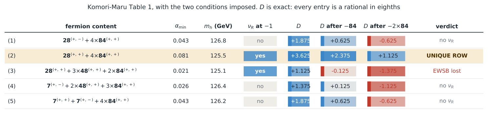
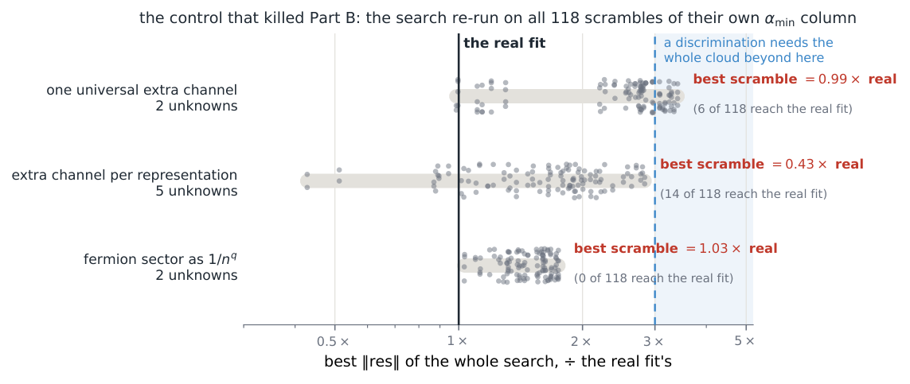
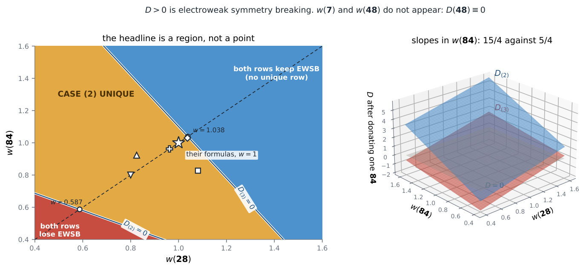
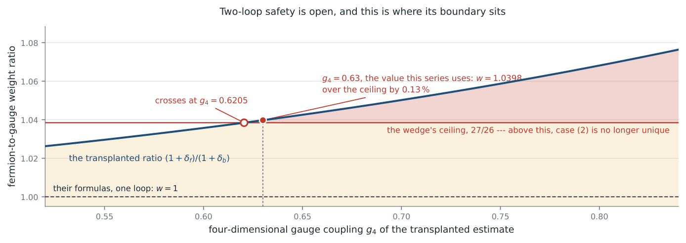

Proton Decay in SU(7) Grand Gauge-Higgs Unification: An Obstruction, Its Minimal Escapes, and the One Row of Their Table 1 That Can Pay for Them (Part VI)
At a glance
What the paper contributes
Komori and Maru's six-dimensional SU(7) grand gauge-Higgs model leaves proton decay to future work. Working inside their construction and with their own equations, the paper finds an obstruction, classifies the minimal escapes and selects one row of their Table 1 as the benchmark to compute next; it does not deliver that model.
- An obstruction at one generation. Three anomaly channels force XQ = −1/6, where U(1)′ = T3L + Y − (B − L) identically and the four dimension-6 |ΔB| = 1 operators are neutral; two further channels require a right-handed neutrino of charge −1, which only a 28 supplies (rows (2) and (3)).
- The escapes, inside their own group. A ladder extra(L) = (1 − k)/2 and the identity [SU(2)L]²U(1)′ = ½ Σj Aj (Proposition 1): fourteen anomaly-free three-generation assignments, two of which fit their tensors. The 48 cannot host a generation, because under diagonal ±1 parities a real representation is vector-like (Proposition 2, a specialisation of Gogoladze–Mimura–Nandi).
- The bill, in eighths. V″(0) = −π²ζ(3)D with D rational per multiplet (84(+,+) ↦ 5/4, 48(+,+) ↦ 0): only case (2) satisfies both necessary conditions, at one-loop curvature.
- A selection rule in closed form. Protection fails iff qφ = |Aj|/n (Proposition 3); qφ = 3/2 protects for every half-integer brane-quark charge.
- The instrument, audited. Their αmin column is not reproduced (an open question, not a defect claim); the verdict holds on a wedge of multiplicative repairs, and two-loop safety is left open.
🚀 Start here: Proposition 1: the left-handed SU(2) anomaly of U(1)′ is half the sum of the proton-operator charges.
Main results:
- Proposition 1: the left-handed SU(2) anomaly of U(1)′ is half the sum of the proton-operator charges
- Proposition 2: under diagonal ±1 parities a real representation furnishes no chiral generation
- Proposition 3: protection fails iff qφ = |Aⱼ|/n: a set with a maximum, so protection is a half-line
🗺️ Map of the results (click a box to go to it)
Dependencies in the written proof: an arrow A → B means that this proof of B uses A. Every result rests on its written proof; the tags record what was checked besides, and each statement's “Evidence & scope” block says how far. The colour of a box is its strongest tag, in the order above; the tags in the box give the rest. Boxes with a thick border are the main results; click a box to read the statement.
📐 Setting (copied from the paper, §2)
The model of [ 1 ] is six-dimensional \(SU(7)\) on \(S^1/{\mathbb {Z}}_2\times S^1/{\mathbb {Z}}_2\). Its orbifold parities are their eqs. (11)–(13),
the Standard-Model fermions are localised at fixed points (their eqs. (43)–(47)), and the bulk carries 6D Dirac fermions in \(\mathbf{7}\), \(\mathbf{28}\), \(\mathbf{48}\) and \(\mathbf{84}\) whose only role is the one-loop Higgs potential. Their Wilson-line vacuum leaves \(SU(3)_C\times U(1)_{\rm em}\) together with one extra abelian factor, their eq. (79),
which they say must be broken by a \(U(1)'\)-charged 4D scalar on a fixed point. (§3) Write \(X_Q\) for the \(U(1)'\) charge of the brane quark doublet. […] The four dimension-6 \(|\Delta B|=1\) operators then carry a single \(U(1)'\) charge
(§4) \(\mathrm{extra}(L)=\frac{1-k}{2}\) — a ladder spaced by \(1/2\) and indexed by how many index-7 boxes the multiplet carries. (§6) A vacuum expectation value of charge \(q_\varphi \) does not destroy the symmetry: it breaks \(U(1)'\) to a discrete subgroup, and an operator of charge \(A\) can be dressed with \(\langle \varphi \rangle \) insertions only if \(A/q_\varphi \in {\mathbb {Z}}\).
Abstract.
Komori and Maru’s \(SU(7)\) grand gauge-Higgs unification [ 1 ] leaves proton decay to future work, and notes that the extra \(U(1)'\) surviving their Wilson-line vacuum must be broken by a charged scalar on a fixed point. We compute what that \(U(1)'\) can and cannot do, and what comes out is three things in order — an obstruction in the one-generation version as published, a minimal classification of the extensions that remove it, and a single benchmark worth computing in full — rather than a solution. All six anomaly channels are evaluated on their own content with their own conjugate-pairing prescription: three of them force the brane-quark charge to \(X_Q=-1/6\), which is precisely where the \(U(1)'\) stops forbidding the four dimension-6 \(|\Delta B|=1\) operators; there \(U(1)'=T_{3L}+Y-(B-L)\) identically, a span under which all four are neutral, so the failure is structural. Two further channels do not cancel on the published spectrum and, absent a Green–Schwarz mechanism, demand extra Standard-Model singlets; on the charges their own representations supply, the two conditions leave a one-parameter family in which the net number of \(\mathbf{28}\) singlets is never zero, so a \(\mathbf{28}\) is necessary and not merely sufficient, and only two rows of their Table 1 carry one at the right parity. The literature’s cure — a family-dependent charge — is available inside their own group: a ladder \(\mathrm{extra}(L)=(1-k)/2\) indexed by the number \(k\) of index-7 boxes, and the identity \([SU(2)_L]^2\, U(1)'=\tfrac 12\sum _j A_j\), so that anomaly cancellation and proton protection coincide only for one generation. The rung hosting a third, inequivalent lepton generation sits in an \(\mathbf{84}^{(+,+)}\) that every row of their Table 1 already contains. By their own argument a lepton-hosting bulk multiplet is massive and leaves the Higgs potential, and the curvature of that potential at the symmetric point is exactly \(V''(0)=-\pi ^2\zeta (3)D\) with \(D\) rational: each \(\mathbf{84}^{(+,+)}\) is worth exactly \(5/4\) and each \(\mathbf{48}^{(+,+)}\) exactly \(0\), so donating one \(\mathbf{84}\) takes case (3) from \(9/8\) to \(-1/8\), stabilising the symmetric point and eliminating its interior broken minimum in the tested one-loop potential, while case (2) survives with the largest margin of the five. That second zero is not decoration: a \(\mathbf{48}\) donated free would let case (3) escape at no cost, and case (3) holds three. It cannot, and the reason is not ours: matter in the adjoint is always vector-like, which [ 13 ] states as well known and cures with a \({\mathbb {Z}}_3\) projection. Their parities are \(\pm 1\) and diagonal, so that cure is unavailable here — each surviving state of the \(\mathbf{48}\) comes with its own conjugate at the same 4D chirality and the zero modes are vector-like without exception (\(18\) of \(18\), against \(10\) and \(34\) chiral states in the \(\mathbf{28}\) and the \(\mathbf{84}\)). Ours is the specialisation and the price it carries, not the mechanism. The first condition is derived on their published one-generation content, but it survives the extension: of the fourteen anomaly-free three-generation assignments only two fit inside their own tensors — the rest need a rung their own content cannot host — and both require that same singlet. So the two conditions are conditions on one object at one generation number, and case (2) is the only one of the five published rows that satisfies both at once — within the minimal extension considered, and at the level of the one-loop curvature; on the second assignment, which consumes two \(\mathbf{84}\)s instead of one, it is the only row left standing at all. That is a strong necessary filter, not a demonstration that case (2) works: the modified potential is not recomputed here, so whether its minimum still lands at a realistic Higgs mass is not answered. Finally, the residual discrete symmetry left by the breaking scalar gives a selection rule in closed form — protection fails iff \(q_\varphi =|A_j|/n\), a set with a maximum — so protection is a half-line rather than a tuning, and \(q_\varphi =3/2\), the charge of the \(\mathbf{84}\)’s pure index-7 component, forbids all four operators to all orders for every half-integer brane-quark charge. We do not reproduce their Table 1 \({\alpha _{\min }}\) from their published formulas, and state that as an open question rather than a defect: the \(k\gg 1\) truncation, the transcription and every multiplicative repair are excluded at one loop, and so is the gauge sector, which is rebuilt here from the adjoint’s own charge-and-parity table rather than from their eq. (62). Loop order is left open. One by-product is a test rather than a result: \(m_h{\alpha _{\min }}/\sqrt{F''({\alpha _{\min }})}\) is independent of the row and of \(R_5\), \(R_6\) and their ratio, so any table of this kind must return one number on every line at a single gauge coupling. Theirs does on three rows of five. The failure does not reach the verdict, which is the sign of one rational number per row: that sign holds, at one loop, on an explicit region containing every repair ever fitted to the discrepancy, and the largest of them — a reweighting of the \(\mathbf{48}\), the one thing their \({\alpha _{\min }}\) column does ask for — is invisible to it identically. What that region does not absorb is loop order, and that is said rather than left to be found. The wedge tolerates a relative gauge-versus-fermion rescaling of \(1/27\); the closest published analogue — four-dimensional and thermal, with both the gauge and the fermionic half included — lands at \(1.0398\) against a ceiling of \(1.0385\), on the wrong side and by less than half a per cent, at the nominal coupling. An earlier draft answered that with the \({\alpha _{\min }}\) column; the answer is withdrawn here, because five row-by-row fits scattering over \(20\, \% \) measure a discrepancy and not a weight, and a two-loop term is under no obligation to be a uniform rescaling of anything. So the one-loop verdict is robust over every multiplicative deformation studied, its margin is quoted exactly, and two-loop safety is left open rather than defused — which is to say that the boundary of validity is located rather than argued away. Where the failure sits is localised as far as five rows allow — on the one multiplet the two failing rows share — and because five rows cannot separate that from their being the two smallest \({\alpha _{\min }}\), we search their own allowed content for a row that would. One exists inside their own Higgs-mass window, and the two readings commit to \({\alpha _{\min }}=0.0378\) against \(0.0612\) for it. We adopt neither, and write both down. Taken together this paper selects the next model to be computed in this line; it does not hand that model over finished.
1 Introduction
In gauge-Higgs unification the Standard Model Higgs is not a scalar added by hand but the extra-dimensional component of a higher-dimensional gauge field [ 3 , 4 ] . A potential for it is forbidden at tree level by the gauge symmetry and generated at one loop, where it is finite however non-renormalisable the theory is: the Higgs mass is protected for a reason rather than by a cancellation, and the hierarchy problem is solved by symmetry. The price is that the compactification scale cannot be far above the weak scale, which is what makes such models predictive and, eventually, testable.
The hierarchy problem was posed inside grand unification, so extending gauge-Higgs unification to a grand unified group — grand gauge-Higgs unification — is the natural next step, and it has been taken in several directions. It comes with grand unification’s oldest liability. A unified group relates quarks to leptons, and the dimension-6 operators that follow violate baryon number [ 5 , 6 ] ; unless something forbids them, the proton decays far too fast. The known cures are three: a broken abelian factor leaving a residual discrete gauge symmetry that the operators cannot satisfy [ 8 , 9 ] ; a family-dependent abelian charge, since a family-universal \(B-L\) cannot see the \(B-L\)-conserving operators at all [ 7 ] ; and geographic separation, placing generations at different fixed points of an orbifold [ 14 , 15 ] .
Komori and Maru [ 1 ] construct a six-dimensional \(SU(7)\) model of exactly this kind on \(S^1/{\mathbb {Z}}_2\times S^1/{\mathbb {Z}}_2\), built around the \(SU(4)\) gauge-Higgs unification whose weak mixing angle comes out \(\sin ^2\theta _W=1/4\) at the compactification scale [ 2 ] — close enough to the measured value, once run down, to be worth taking seriously. They compute the one-loop Higgs potential, find five bulk fermion contents that break electroweak symmetry with a Higgs mass in \(125\)–\(127\) GeV, and predict a compactification scale for each. Their vacuum leaves one extra abelian factor unbroken, which they say a charged scalar on a fixed point must break; and they close by writing that “how the dangerous proton decay processes can be forbidden …are left for our future work.” This paper is about that sentence.
It is also Part VI of a series on six-dimensional \(SU(4)\) gauge-Higgs unification, and not every earlier part leads here. Parts I–III are the classification side of that line — which fermion completions are anomaly- and tadpole-compatible [ 25 ] , which \(SU(4)\) representations contain a Standard-Model generation and why rank three is critical [ 26 ] , and a centre-charge selection rule on the Wilson-line potential whose fundamental domain turns out to be representation-dependent [ 27 ] . None of their results is used below. They are what the series is about, not an input to this paper, and the honest reason they are cited here is that they are why the two lines meet at all: the \(SU(4)\) they classify is the theory [ 1 ] built their \(SU(7)\) around.
What does carry over is the last two, and one of them heavily. Part IV gave the closed form that makes a Wilson-line potential computable — Schur functions on the non-identity component of \(O(4)\) [ 28 ] — and it reaches this paper only through Part V; nothing below evaluates a Schur function. Part V [ 30 ] is the direct parent, twice over. Its implementation is what validates ours in §7, against a published six-dimensional vacuum and, for the first time, against that vacuum’s absolute scale. And its theme returns here as arithmetic rather than as a caveat: what a one-loop Wilson-line potential cannot see is the charge-zero states, so it fixes the Dynkin index and not the Casimir — which is why the \(\mathbf{48}\) contributes exactly nothing to the curvature at the origin (§5), and why the exclusion list of §7 is a one-loop list and says so. Those five papers ask what is excluded; this one asks the forward question, given a content what does it predict, which is why Part V’s negative result is the tool it needs.
What follows computes what their leftover \(U(1)'\) can and cannot do, and it is worth being plain about what that delivers and what it does not. It delivers three things. First, an obstruction in the version as published: at one generation its \(U(1)'\) cannot forbid proton decay, and the reason is structural rather than an oversight — their own anomaly conditions force it onto a charge where it is identically \(T_{3L}+Y-(B-L)\), a combination the dangerous operators are neutral under. This is a constraint the model meets or does not; it is not a defect in the work, which sets proton decay aside explicitly and says so. Second, a minimal classification of the escapes: the literature’s cure, a family-dependent charge, does fit inside their own group as a ladder of lepton charges indexed by one integer, and of the assignments that survive every anomaly channel only two are realisable in their own inventory. Third, a benchmark: hosting a generation costs a multiplet out of the Higgs potential, the curvature of that potential at the symmetric point is an exact rational per multiplet, so the bill can be read off, and exactly one row of their Table 1 can pay it under both escapes.
What it does not deliver is that row as a finished model. The modified potential is not recomputed, so its minimum, its Higgs mass and its compactification scale are not predicted here. This paper selects the next model to be computed; it does not hand that model over finished. Then, because a selection is only as good as the instrument behind it, the last third audits the instrument — including one column of their table we cannot reproduce, stated as an open question and localised as far as five rows allow.
§2 fixes what is inherited from [ 1 ] and what is recomputed, and derives three of their own equations rather than assuming them. §3 evaluates the six anomaly channels. §4 builds the ladder and finds which rungs their content can host — by a box count for the tensor powers, and by a reality argument for the \(\mathbf{48}\), which is not one. §5 prices the escape. §6 settles the one datum their paper leaves unstated, the charge of the breaking scalar. §7 is the audit of the instrument and §8 shows what of the conclusion it can reach. The last three are the reader’s, not ours: §9 says whose every mechanism is, §10 puts every claim on one page against the control that carries it, and §11 states what is left — in the order in which each question hands to the next, and ending where Part VII begins.
Everything below is one descent, and Figure 1 is the whole of it on one page: every statement in this paper follows from the six anomaly channels of their own published content, and the last box is the only thing in it that names a row.
🖼️ Figure 1
![The chain, and it is one chain: every statement in this paper descends from the six anomaly channels evaluated on [ 1 ] ’s own content. Left, the thread; right, what each link buys and where it is done. Read top-down it is an obstruction (the first three links, which depend on no extension of ours)…](images/img-0001.png)
The chain, and it is one chain: every statement in this paper descends from the six anomaly channels evaluated on [ 1 ] ’s own content. Left, the thread; right, what each link buys and where it is done. Read top-down it is an obstruction (the first three links, which depend on no extension of ours), then a classification of the escapes (the next two, which assume three generations and their inventory), then a benchmark (the next two). The green box selects the row worth computing in full; it does not compute it. The dashed box is not a link but the edge of the chain.
How to read it.
The chain is one chain, but its links are not all the same kind of statement, and the paper is easier to judge if they are kept apart. §3 is a structural result about their published content: six channels on the model as printed, and its conclusion — no protection, for an identity — depends on no extension of ours. §4 and §5 are the minimal extension and its price: they assume three generations and their own inventory of representations, and a reader who enlarges that inventory must re-run the first condition. §7 and §8 are neither: they are a diagnosis of the instrument, including one column of their table we cannot reproduce, and they exist so that the verdict can be judged rather than trusted. §11 is what none of the three settles — which is what the dashed box at the foot of the figure marks: every box above it is exact at one loop and the statement in it is not, and the first of the questions it opens is answered in Part VII [ 29 ] .
hdrblue!45 hdrblue!85Everything below is arithmetic on someone else’s equations, so the first question is which equations: what is inherited from [ 1 ] verbatim, and what has to be derived before it can be used?
2 What is inherited, and what is computed
In gauge-Higgs unification the Higgs is the extra-dimensional component of a higher-dimensional gauge field [ 3 , 4 ] , so its potential is generated at one loop and is calculable. The model of [ 1 ] is six-dimensional \(SU(7)\) on \(S^1/{\mathbb {Z}}_2\times S^1/{\mathbb {Z}}_2\), a six-dimensional extension of the five-dimensional \(SU(4)\) gauge-Higgs unification that predicts \(\sin ^2\theta _W=1/4\) at the compactification scale [ 2 ] . Its orbifold parities are their eqs. (11)–(13),
the Standard-Model fermions are localised at fixed points (their eqs. (43)–(47)), and the bulk carries 6D Dirac fermions in \(\mathbf{7}\), \(\mathbf{28}\), \(\mathbf{48}\) and \(\mathbf{84}\) whose only role is the one-loop Higgs potential. Their Wilson-line vacuum leaves \(SU(3)_C\times U(1)_{\rm em}\) together with one extra abelian factor, their eq. (79),
which they say must be broken by a \(U(1)'\)-charged 4D scalar on a fixed point. Their conclusion states that “how the dangerous proton decay processes can be forbidden, for instance, by some symmetries …are left for our future work.” This paper answers that.
Three properties of their construction are inherited verbatim and used throughout. (i) The Standard Model fermions are not embedded in the multiplets of their Table 1 — of the bulk fermions of their §3.2 they write that “these 6D fermions have nothing to do with the SM quarks and leptons, namely the SM fermions are not embedded in these \(SU(7)\) multiplets.” Their leptons are elsewhere in the bulk, in a \(\mathbf{21}\) whose parity they fix by hand in their eq. (43); their quarks are 4D fields on a fixed point, for their own stated reason, that the fractional hypercharges of quarks are not on the lattice a tensor product of \(\mathbf{7}\)s generates. That distinction is the whole mechanism of §4: the escape moves a lepton generation out of a multiplet that is not in their Table 1 and into one that is, and that is why it has a price. (ii) Unwanted bulk zero modes are lifted by 4D fermions conjugate to them with Dirac masses on the fixed points, the sentence after their eq. (76); a vector-like pair contributes nothing to any anomaly, which we verify rather than assume (200 random pairs, largest change \(0\)). (iii) A bulk multiplet that hosts leptons must be massive, and a massive bulk fermion’s potential carries \(e^{-M\pi R}\sim e^{-O(10)}\) and is dropped — their own sentence below eq. (79). Point (iii) is what turns a group-theoretic escape into a bill charged against their Table 1, and it is their sentence, not our inference.
Everything else is computed. To make that credible we first rebuilt the whole of their §3 from their own equations rather than trusting it: their structure constants (their eq. (54)) come out \(13/13\) exact, and the one they omit, \(f^{48,44,45}\), is exactly zero, which is why the \(U(1)\) is absent from their list; the Kaluza-Klein spectrum on the adjoint has Wilson-line charges \(\{ 0,\pm \tfrac 12,\pm 1\} \) with multiplicities \(26,20,2\), cross-checked by pure representation theory (\(\mathbf{3}+\mathbf{1}+10\cdot \mathbf{2}+24\cdot \mathbf{1}\) under the \(SU(2)\) generated by \(T^{44}\)); their gauge potential eq. (68) is rebuilt with its coefficient \(7=4+3\) identified (\(4\) from \(A_\mu \) on the two colour-singlet doublets, \(3\) from \(A_5,A_6\) on the six coloured states, and no ghost anywhere); their eq. (67) is proved rather than sampled; and all four branchings (41), (57), (69), (70) are derived from (11)–(13), with hypercharges and all three parities.
Their eq. (68) is also derived from the group theory, and not only from their own eq. (62), which is a different and weaker statement. Because their Wilson line touches only indices \(5\) and \(7\), and both \(P_5P_5'\) and \(P_6\) take the same value on those two, the Wilson-line charge and the two parities are simultaneously diagonal — so every one of the \(48\) adjoint generators carries a definite \((q,P_5P_5',P_6)\), and eq. (68) must be a sum over that table. It is. Writing \(a\) for the weight of a \(P_6=+1\) pair and \(b\) for a \(P_6=-1\) pair, the two rows with no \(P_6=-1\) pairs fix \(a=2\) independently of each other — a redundancy that could have failed and does not — and the remaining row then gives \(b=\tfrac 12\). All three coefficients follow: \(2\), \(4\), and \(7=2\cdot 2+6\cdot \tfrac 12=4+3\), which is the split their own text states and never derives.
One of those rebuilds settles a relation they import rather than derive. Their eq. (81), \(m_W^2=\alpha ^2/4R_5^2\), is introduced with the words “the W boson mass in 5D \(SU(4)\) GHU is given by” — a different model — and their eq. (82), the whole \(1/R_5\) column of their Table 1 and the constant in (3) below all rest on it. It is also a theorem of their own \(SU(7)\). Their eq. (41) puts \(SU(2)_L\) on indices \(4,5\), so \(W^\pm \) are the raising and lowering combinations there; under the shift operator \(M^{ac}=f^{a,44,c}\) of their eq. (53) those directions carry Wilson-line charge \(\tfrac 12\), not the \(1\) carried by the only two other charged modes, so the lightest tower gives \(m_W=\alpha /2R_5\) from their eq. (54) alone. The control that had to fire does: the charge-\(1\) modes exist — had \(W\) been one of them their eq. (82) would carry a factor \(2\) — and the photon direction of their eq. (78) comes out exactly neutral, so it stays massless.
The obvious Cartan for their generator labels — the nested chain \(SU(2)\subset SU(3)\subset \dots \subset SU(7)\), whose diagonal generators sit at \(3,8,15,24,35,48\), where theirs sit — reproduces eleven of the thirteen constants of their eq. (54) and fails on the three diagonal ones. It reads as “their paper has two errors in the diagonal sector.” It is not: the guess is wrong, refuted by their own eqs. (78) and (79), and it puts \(T^{48}\) — which they state commutes with the Wilson line — on a generator that does not.
🆕 Classical and new: the paper: the guess «reads as “their paper has two errors in the diagonal sector.” It is not: the guess is wrong, refuted by their own eqs. (78) and (79)» (§2).
↳ Not used by another result of the paper.
Two facts about their §3.2 that they do not state but that it needs came out of the rebuild. First, their \(\mathbf{28}\) is \(\mathrm{Sym}^2(\mathbf{\bar7})\), the conjugate: read as \(\mathrm{Sym}^2(\mathbf{7})\) its eq. (69) matches \(2/4\), with every parity right and two hypercharges negated, and as \(\mathrm{Sym}^2(\mathbf{\bar7})\) it matches \(4/4\). The test discriminates — the \(\mathbf{84}\) fits \(\mathrm{Sym}^3(\mathbf{7})\) at \(10/10\) and \(\mathrm{Sym}^3(\mathbf{\bar7})\) at \(1/10\). It is invisible to \(V_{\rm eff}\), which uses only the \(SU(2)_L\) label and the product \(\eta \eta 'P_5P_5'\), so it is a datum and not a defect. Second, and load-bearing: their Wilson line (their eq. (77)) is the identity except on indices \(5\) and \(7\), and \(P_5P_5'\) takes the same value \(-1\) on those two indices. Were it otherwise, the Wilson-line charge eigenbasis \(u,v=(5\pm 7)/\sqrt2\) would not be a parity eigenbasis, and their eq. (72), which depends on the single product \(\eta P_5\eta 'P_5'\), would not be well defined.
hdrblue!45 hdrblue!85With their section 3 derived rather than assumed, the extra \(U(1)\) can be interrogated on its own terms. The first question is what anomaly cancellation leaves free.
3 All six channels, and what they force
Write \(X_Q\) for the \(U(1)'\) charge of the brane quark doublet. Their eq. (47) is \(Y_u\, \bar q_L\tilde A_5 u_R+Y_d\, \bar q_L A_5 d_R\), and the \(A_5\) zero mode carries \(\mathrm{extra}(H)=+1/2\), so \(\mathrm{extra}(u_R,d_R)=X_Q\pm \tfrac 12\) and the quark Yukawas fix everything but \(X_Q\) itself. The four dimension-6 \(|\Delta B|=1\) operators then carry a single \(U(1)'\) charge
The \(U(1)'\) forbids all four except at the single point \(A=0\), i.e. \(X_Q=-1/6\).
Evaluating all six anomaly channels on their published one-generation content, with their own conjugate-pairing prescription applied so that lifted zero modes contribute nothing:
|
channel |
coefficient, as a polynomial in \(X_Q\) |
vanishes at |
|
\([SU(3)_C]^2\, X\) |
\(0\) |
every \(X_Q\) |
|
\([SU(2)_L]^2\, X\) |
\(\tfrac 32X_Q+\tfrac 14\) |
\(X_Q=-1/6\) |
|
\(X^2Y\) |
\(-3X_Q-\tfrac 12\) |
\(X_Q=-1/6\) |
|
\(XY^2\) |
\(-\tfrac 32X_Q-\tfrac 14\) |
\(X_Q=-1/6\) |
|
\(X\cdot \mathrm{grav}^2\) |
\(1\) |
never |
|
\(X^3\) |
\(1\) |
never |
All three constraining channels are linear in \(X_Q\) and all three have the same root. Note that the first of them is \(\tfrac 32X_Q+\tfrac 14=\tfrac 12\big(3X_Q+\tfrac 12\big)=A/2\): the \(SU(2)_L\) anomaly is half the proton-operator charge. That is the one-generation case of Proposition 1 below, and it is why the two conditions collapse into one here.
Three independent channels force \(X_Q=-1/6\), which by (2) is exactly \(A=0\) — the one point at which the \(U(1)'\) stops forbidding proton decay. And at that point, on every field of the theory,
while all four dimension-6 operators have \(Y=0\) and \(B-L=0\). Any \(U(1)\) in that span is blind to them. The failure is structural, not a coincidence of a fitted charge.
Controls. The four pure-Standard-Model channels vanish identically, so one generation with no \(\nu _R\) is anomaly free and the content bookkeeping is sound; \(T(\text{fund})=\tfrac 12\) comes out of the Cartan sum for both \(SU(2)\) and \(SU(3)\) instead of being put in; the derived \(Y=(0,0,0,\tfrac 12,\tfrac 12,-1,0)\) is traceless and reproduces the hypercharges of their eq. (41); and the whole calculation was re-derived independently under Sage from the \(A_6\) Weyl character ring with symbolic \(X_Q\). The Sage control fired: the \(\mathbf{48}\) had first been built from its \(42\) roots only, with the six-state Cartan omitted. Those states are chargeless, so no anomaly number moved — but the zero-mode counts were wrong, and would have propagated.
The two channels that cannot cancel are the interesting ones. \(X\cdot \mathrm{grav}^2\) and \(X^3\) both come out equal to the constant \(1\), so cancelling them requires additional Standard-Model singlets \(x_i\) with
two independent conditions. The minimal solution is one singlet of charge \(-1\): a right-handed neutrino. Among their own representations, the Standard-Model singlets with \(Y=0\) are exactly the pure index-7 components — a charge \(m/2\) needs \(m\) boxes — so
Minimality is not needed, and it is worth not leaning on it. Solving a pair of gravitational and cubic \(U(1)\) conditions in integers is a Diophantine problem with a known general solution [ 21 ] , and on the finite charge set their representations supply it collapses to two lines. Write \(u,w,e\) for the net numbers of singlets at \(\pm \tfrac 12\), \(\pm \tfrac 32\) and \(\pm 1\). The conditions read \(u+3w+2e=-2\) and \(u+27w+8e=-8\); subtracting them gives \(24w+6e=-6\), so the entire solution set is the one-parameter family
a family of exactly the shape [ 21 ] guarantees. What is particular to their model is which value it forbids.
Hence \(e\) is never zero, and the \(\mathbf{28}\) is not the cheapest way to cancel the two channels but the only one — \(e=0\) would require \(w=-\tfrac 14\). No number of \(\mathbf{7}\)s and \(\mathbf{84}\)s, at any parities, cancels them. Imposing this on their Table 1, only cases (2) and (3) can: case (1) has a \(\mathbf{28}\) but at a parity that leaves no singlet zero mode, and cases (4) and (5) contain no \(\mathbf{28}\) at all.
This is a constraint on their model, and it is not stated in their paper — which is what one would expect, since it only becomes visible once the proton-decay question they set aside is taken up. It is also the half of this paper’s conclusion that nothing downstream can disturb: it is a statement about which components exist in their eqs. (69) and (70) with their parities, and no repair of the potential can reach it. That will matter in §8.
hdrblue!45 hdrblue!85So at one generation the surviving symmetry cannot supply the protection, and the reason is an identity rather than an accident of a fitted charge. The literature has a cure for exactly this; does it fit inside their own group?
4 A ladder inside their own \(SU(7)\)
The disease — a gauged \(B-L\) (or anything in \(\mathrm{span}\{ Y,B-L\} \)) failing to forbid the \(B-L\)-conserving proton operators — is old, and so is its cure: make the abelian charge family-dependent, \(B-x_iL\) with \(\sum x_i=3\) and \(x_i\neq 1\) [ 7 ] . In [ 1 ] a lepton’s charge is not free data: the leptons come from a bulk multiplet and \(U(1)'\) is a fixed generator of \(SU(7)\), so the charge is read off the weight. The question is whether the cure survives that rigidity.
Demand that a component of an \(SU(7)\) tensor be a colour singlet, an \(SU(2)_L\) doublet member, and \(Y=-1/2\). With \(Y=(0,0,0,\tfrac 12,\tfrac 12,-1,0)\) per index, the non-weak part must carry \(Y=-1\): exactly one index \(6\), and any number \(k\) of index \(7\).
|
\(k\) |
boxes |
\(L\) |
\(\mathrm{extra}(L)\) |
\(e_R\) (their eq. (46): \(5\leftrightarrow 7\)) |
\(\mathrm{extra}(L)+\mathrm{extra}(e^c)\) |
|
\(0\) |
2 |
\((5,6)\) |
\(\phantom{-}1/2\) |
\((6,7)\) |
\(1/2\) |
|
\(1\) |
3 |
\((5,6,7)\) |
\(\phantom{-}0\) |
\((6,7,7)\) |
\(1/2\) |
|
\(2\) |
4 |
\((5,6,7,7)\) |
\(-1/2\) |
\((6,7,7,7)\) |
\(1/2\) |
Colour: blue shade = the number’s size within its column.
The rung index is \(k\), the number of index-7 boxes — not the total number of boxes, which is \(k+2\). The shaded row is the one that matters below.
— a ladder spaced by \(1/2\) and indexed by how many index-7 boxes the multiplet carries. Not free, and not unique: exactly what family dependence needs.
Controls. Rung 0 reproduces their own \(L=\mathbf{21}^{56}\), i.e. their eq. (43), with nothing put in by hand; and \(\mathrm{extra}(L)+\mathrm{extra}(e^c)=\tfrac 12\) — the Higgs’s own charge — on every rung, so the charged-lepton Yukawa closes at each one, since it comes from the 6D gauge coupling inside a single multiplet.
For \(N\) generations with proton-operator charges \(A_j=3a_j+l_j\),
Isabelle · oursshow
anomaly_identity · Isabelle/SU7Rung/Family_Anomaly.thy, line 27 — the identity, with the doublet content (Q_j with charge a_j, 3 colours; L_j with charge l_j) as the model input
theorem anomaly_identity: "anomaly a l N = 1/2 * (\<Sum>j<N. Acharge a l j)"
protection_iff_off_mean · Isabelle/SU7Rung/Family_Anomaly.thy, line 60 — one generation forces A = 0; three can escape; a family-universal quark charge gives A_j = l_j − l̄, so protection holds iff no generation sits at the mean
corollary protection_iff_off_mean: assumes "0 < N" "\<And>j. a j = c" "anomaly a l N = 0" shows "(\<forall>j<N. Acharge a l j \<noteq> 0) \<longleftrightarrow> (\<forall>j<N. l j \<noteq> (\<Sum>i<N. l i) / N)"
🆕 Classical and new: the paper lists it among what is ours (§9); at N = 1 it is the entry 3X_Q/2 + 1/4 = A/2 of the anomaly table; the family-dependent cure it mirrors is Lee–Ma [FamilyU1].
↳ Not used by another result of the paper.
💡 In plain words (commentary, not part of the paper)
1. Give each of \(N\) generations a proton-operator charge \(A_j=3a_j+l_j\) under the leftover \(U(1)'\). Then the mixed anomaly \([SU(2)_L]^2\, U(1)'\) is exactly half of \(\sum _jA_j\). 2. Why it matters: anomaly cancellation asks for \(\sum _jA_j=0\), and proton protection asks for \(A_j\ne 0\) for every \(j\). With one generation these are the same equation, so the published one-generation model cannot have both: that is the obstruction of §3, where the \(SU(2)_L\) channel is \(\tfrac 32X_Q+\tfrac 14=A/2\). With three generations a sum can vanish with no term vanishing, so a family-dependent charge escapes, and inside \(SU(7)\) the lepton charges come from the ladder \(\mathrm{extra}(L)=(1-k)/2\). 3. The paper obtains the identity by summing the anomaly state by state over the generations. The family-dependent cure itself is Lee and Ma’s; what the paper claims is the identity and the ladder inside this model. Imposing all six channels leaves 14 assignments, of which exactly two fit inside the model’s own tensors, and both need a singlet of charge \(-1\).
🛡️ Evidence & scope
Program: the ladder extra(L) = (1−k)/2, the identity summed state by state over N generations, the 14 anomaly-free assignments. scripts/su7_family_u1.py
Program: the 14 assignments re-derived by an independent path, and the two that fit their tensors. scripts/su7_realisable.py
Program: the six anomaly channels on the published one-generation content (and a Sage re-derivation, per §3). scripts/su7_anomaly_channels.py
It is obtained by summing the \(SU(2)_L\) anomaly state by state over \(N\) generations and comparing with \(\sum _jA_j\); the \(N=1\) case is the entry \(\tfrac 32X_Q+\tfrac 14=A/2\) of the table in §3, which is where it can be read off directly.
Anomaly cancellation demands \(\sum _j A_j=0\); proton protection demands \(A_j\neq 0\) for every \(j\). At \(N=1\) these are the same equation, which is the entire content of §3. At \(N=3\) they are not: a sum vanishes with no term vanishing. The escape is real, and it exists only for \(N{\gt}1\). This is [ 7 ] ’s \(\sum x_i=3\), \(x_i\neq 1\) in their variables.
Keeping the brane-quark charge family-universal — which is what an unrestricted renormalisable CKM structure requires before \(U(1)'\) is broken, since a family-dependent \(a_j\) forbids the off-diagonal quark Yukawas there; afterwards, operators dressed with \(\langle \varphi \rangle \) can regenerate mixing, so this is a choice of the minimal extension and not a theorem — gives \(a=-(\sum l)/9\) and \(A_j=l_j-\bar l\), so protection holds iff no generation sits at the mean. Imposing all six channels with right-handed neutrinos drawn from the singlet ladder, 14 assignments of (rung set, \(X_Q\)) survive, each naming the representation and parity of the neutrinos it needs. The control that had to fire does: the family-universal rungs \((\tfrac 12,\tfrac 12,\tfrac 12)\) return \(a=-1/6\) and \(A_j=0\), recovering §3 as a special case.
Whether the orbifold keeps such a generation is a separate question, and their eqs. (37)–(40) answer it: a zero mode exists iff \(p_5p_5'=\eta \eta '\), with chirality \(g=-\eta p_5\). Demanding \(L\) left-handed and \(e_R\) right-handed:
|
representation |
rung \(k\) |
hosted at |
|
\(\mathbf{21}\), \(\mathbf{28}\) |
0 |
\((\eta ,\eta ')=(-1,+1)\) — their own eq. (43) |
|
\(\mathbf{35}=\Lambda ^3\) |
1 |
never — \(e_R=(6,7,7)\) needs a repeated index, which an antisymmetric tensor has not |
|
\(\mathbf{84}\) |
1 |
\((\eta ,\eta ')=(+1,+1)\) |
|
\(\mathbf{48}=\text{adj}\) |
0, 2 |
never — it carries four lepton doublets, but \(\langle A_5\rangle \) takes none of them to a charged-lepton singlet |
And an \(\mathbf{84}^{(+,+)}\) is already in every single row of their Table 1, introduced for the Higgs potential and for nothing else. The multiplet that would host a third, inequivalent lepton generation is not a new ingredient.
Their own tensors then decide which rungs exist at all, and it is a short count. A rung-\(k\) doublet is the component \((5,6,7^k)\), so \(2+k\) boxes, and its partner \(e_R=(6,7^{k+1})\) must sit in the same multiplet or the Yukawa of their eq. (46) does not close. Rung \(0\) needs two boxes: the \(\mathbf{21}\) or the \(\mathbf{28}\). Rung \(1\) needs three, and by the row above only the \(\mathbf{84}\) of them survives. Rung \(2\) and above need four boxes or more, and no such tensor power is in their paper.
That last sentence is not the whole exclusion, and the part it misses is load-bearing. The \(\mathbf{48}\) is not a tensor power at all, so a box count does not reach it — and it sits in three of their five rows. Counted directly, the adjoint does carry a lepton doublet: the pair \((7,\bar4),(7,\bar5)\), with \(Y=-\tfrac 12\) and \(\mathrm{extra}=-\tfrac 12\), which is rung \(2\). It survives the projection in a \(\mathbf{48}^{(+,+)}\), and the test that says so rejects \(8\) of the \(10\) states at \(|q|=\tfrac 12\), so it is not vacuous. Its charged-lepton partner would need \((Y,\mathrm{extra})=(-1,-1)\), which is nowhere in their content: absent from the \(\mathbf{48}\), and as a tensor it is \((6,7^3)\), four boxes.
But the partner is the wrong place to look, and no localised field can rescue this.
Let the orbifold parities \(P_5,P_5'\) act diagonally on the indices of the fundamental, so that a component of a bulk multiplet survives in the multiplet of parities \((\eta ,\eta ')\) iff \(P_5P_5'=\eta \eta '\) and then carries \(4\)D chirality \(-\eta \, P_5\) (their eqs. (37)–(40)). Then for a real representation the surviving spectrum is vector-like, with no chiral state at either choice of \((\eta ,\eta ')\).
Lean · ours, in partshow
added to the Lean repository after publication (21-oct-2026): the pairing (i, j̄) ↦ (j, ī) for diagonal ±1 parities, and the counts 18/18, 24/24 with the controls 10 and 34
GaugeHiggsUnification.SU7RealPairing.adjoint_vectorLikeGaugeHiggsUnification.SU7RealPairing.adjoint_unpaired_eq_zeroGaugeHiggsUnification.SU7RealPairing.adjoint_survivors_ppGaugeHiggsUnification.SU7RealPairing.adjoint_survivors_pmGaugeHiggsUnification.SU7RealPairing.sym2_unpairedGaugeHiggsUnification.SU7RealPairing.sym3_unpaired
✅ Checked when this page was built: SU7RealPairing.lean compiles with Lean 4.35.0, no errors, no sorry. Axioms — adjoint_vectorLike: propext, Classical.choice; adjoint_unpaired_eq_zero, adjoint_survivors_pp, adjoint_survivors_pm, sym2_unpaired, sym3_unpaired: propext, Classical.choice, Quot.sound.
Reproduce: Lean 4.35.0, Mathlib f0b4c8150aa0; in that Lean project, lake env lean SU7RealPairing.lean (SHA-256 of the compiled file: 179d657feb7879fa…; a source page on this site may show it with comments edited, under its own hash).
Trust base: 🔒 kernel only — only part of the statement is formal (see the box). Lean: 6 results, standard axioms only
Proof: in this note·Formalized: Isabelle/HOL, by the author (public formalizations repository)·Covers: the whole statement·Cite: Proposition 1, p. 9, doi:10.5281/zenodo.22033303
🆕 Classical and new: not claimed as new: that adjoint matter is vector-like is stated as well known by Gogoladze–Mimura–Nandi [GMN], who cure it with a Z₃ projection; the paper claims the specialisation to the ±1 diagonal parities, the counts and the chiral controls (§9).
↳ Not used by another result of the paper.
For the adjoint \(\mathbf{7}\otimes \mathbf{\bar7}-\mathbf{1}\) the conjugate of the component \((i,\bar\jmath )\) is \((j,\bar\imath )\), which lies in the same multiplet. Since the parities are diagonal, \(P_5P_5'(j,\bar\imath )=p_jp_i=P_5P_5'(i,\bar\jmath )\) and \(P_5(j,\bar\imath )=P_{5,j}P_{5,i}=P_5(i,\bar\jmath )\): the two survive together and with the same chirality. In an all-left-handed convention the two surviving Weyl fields transform in conjugate gauge representations and therefore admit a gauge-invariant Dirac mass — and their own prescription, a conjugate fixed-point fermion against each unwanted zero mode, supplies one. The argument uses no property of the Wilson line and none of the particular values of these parities — but it does use that they are \(\pm 1\) and diagonal, which is what makes the projection commute with conjugation, and that hypothesis is not free. A \({\mathbb {Z}}_3\) projection has complex eigenvalues, breaks the pairing, and is precisely how the literature obtains chiral families from an adjoint [ 13 ] . Their eqs. (37)–(40) are \({\mathbb {Z}}_2\), so that escape is closed in their model and not in general. □
💡 In plain words (commentary, not part of the paper)
1. When the orbifold parities are diagonal with entries \(\pm 1\), a bulk multiplet in a real representation, such as the adjoint \(\mathbf{48}\), leaves only vector-like zero modes: no chiral state, whatever parities \((\eta ,\eta ')\) it carries. So the \(\mathbf{48}\) cannot host a lepton generation. 2. Why: the conjugate of the adjoint component \((i,\bar\jmath )\) is \((j,\bar\imath )\), in the same multiplet; with diagonal parities both components have the same parity products, so they survive together and with the same chirality, and the pair can be given a Dirac mass. Counted on the model’s content: \(18\) of \(18\) surviving states paired in \(\mathbf{48}^{(+,+)}\), \(24\) of \(24\) in \(\mathbf{48}^{(+,-)}\); the control, the \(\mathbf{28}\) and the \(\mathbf{84}\), leaves \(10\) and \(34\) unpaired. 3. Not new as a mechanism, as the paper says: that adjoint matter is vector-like is stated as well known by Gogoladze, Mimura and Nandi, who cure it with a \(\mathbb Z_3\) projection, unavailable with \(\pm 1\) parities. What matters here is the price: a \(\mathbf{48}^{(+,+)}\) costs exactly \(D=0\), so had it been able to host the escape, case (3) would have paid nothing and the selection of case (2) would fail.
🛡️ Evidence & scope
Program: the 48 at both parities: 18 of 18 and 24 of 24 surviving states paired with their conjugates; control: the 28 and the 84 leave 10 and 34 unpaired. scripts/su7_adjoint_is_vectorlike.py
Program: the adversarial run that made the proposition necessary: the brane escape priced, every other gate open. scripts/su7_brane_partner.py
Counted on their content: a \(\mathbf{48}^{(+,+)}\) has \(18\) surviving states and all \(18\) are so paired; a \(\mathbf{48}^{(+,-)}\), \(24\) of \(24\). Zero chiral states, either way. The doublet arrives already married to its own conjugate, so there is nothing for a localised partner to complete: a brane field would supply the \(e_R\), and the defect is one step earlier.
Control that had to separate two things, and does. If \(\mathrm{Sym}^2\) and \(\mathrm{Sym}^3\) came out vector-like too, this would be measuring the orbifold rather than the reality of the representation — and their model could have no chiral matter at all. They do not: the \(\mathbf{28}\) leaves \(10\) unpaired states and the \(\mathbf{84}\) leaves \(34\). The criterion distinguishes exactly what it claims to.
This also explains a sentence of theirs we had read as a stipulation. Their \(\mathbf{7}\), \(\mathbf{28}\), \(\mathbf{48}\) and \(\mathbf{84}\) are introduced with the Higgs potential as their only role; for the \(\mathbf{48}\) that is not a modelling choice but the only thing a real representation can do here. And it closes the ladder without a residue: no real representation furnishes a chiral generation on this orbifold, so the box count and the reality condition between them cover every multiplet their model contains.
Why this is not merely a tidier proof.
Donating a \(\mathbf{48}^{(+,+)}\) would cost \(D=6-\tfrac 34\cdot 8=0\) exactly (§5), and case (3) holds three of them. Had the adjoint been able to host the escape, case (3) would pay nothing, keep its \(9/8\), survive, and the conclusion of §5 would fail outright — and the assignment that would have used it, \(l=(\tfrac 12,\tfrac 12,-\tfrac 12)\) at \(X_Q=-1/18\), is one of the fourteen that cancel all six channels, so anomalies do not forbid it, the charge \(-1\) is on the bulk lattice, and their own quarks are already brane fields. Every gate we could think of was open except one. The exclusion of the \(\mathbf{48}\) is therefore a step of the argument and not an aside, and the step is the reality of the representation.
Twelve of the fourteen assignments therefore do not fit inside their own content, and exactly two do: \(l=(\tfrac 12,\tfrac 12,0)\) at \(X_Q=-1/9\), and \(l=(\tfrac 12,0,0)\) at \(X_Q=-1/18\). Both of them require a Standard-Model singlet of charge \(-1\) — so the requirement of §3, derived on their published one-generation content, is still the requirement on the minimal three-generation extension.
The first is the minimal change — two generations in \(\mathbf{21}\)s, the third in an \(\mathbf{84}^{(+,+)}\), with \(A=(\tfrac 16,\tfrac 16,-\tfrac 13)\), all non-zero. The second puts two generations in \(\mathbf{84}^{(+,+)}\)s and one in a \(\mathbf{21}\), with \(A=(\tfrac 13,-\tfrac 16,-\tfrac 16)\). They differ in how many \(\mathbf{84}\)s leave the Higgs potential, which is the subject of the next section, and §5 settles both.
hdrblue!45 hdrblue!85The escape is consistent at the level of anomalies, charges, Yukawas and zero modes. It is not free: by their own sentence, a lepton-hosting multiplet leaves the Higgs potential. What does that cost?
5 The bill, in eighths
Electroweak symmetry breaking in this model requires \(\alpha =0\) to be a maximum of \(V_{\rm eff}\): \(\alpha =0\) is the symmetric point (\(m_W=\alpha /2R_5=0\)) and \(\alpha =1\) is their Fig. 1 case, so the vacuum must sit strictly inside. Expanding their eqs. (68) and (72)–(76) at the origin, every term is \(m c^2\sum _n s^n/n^3\) and those two series are exactly \(\zeta (3)\) and \(-\tfrac 34\zeta (3)\). Hence
and electroweak symmetry breaking is possible iff \(D{\gt}0\).
What \(D\) decides, and what it does not.
\(D\) is the curvature at one point. It says the symmetric point is a maximum, and that is all it says: by itself it does not fix where the global minimum falls, whether it falls anywhere phenomenologically useful, the curvature there, or whether a competing minimum exists elsewhere in the period. Two of those four are measurable without predicting anything absolute, and they are measured. On the fifteen configurations the verdict is actually read from — their five rows, and the same five after donating one and after donating two \(\mathbf{84}^{(+,+)}\) — the sign of \(D\) coincides with the existence of an interior minimum in \(15\) of \(15\), and no configuration has more than one interior local minimum on a grid over the whole period. Using the sign as the verdict is therefore not an unchecked leap. It is also not a theorem, and we do not call it one: a content outside this set could in principle carry \(D{\gt}0\) with its minimum pushed to the edge. The other two — where the minimum falls in GeV, and the curvature there — stay out of reach on purpose, because §7 does not reproduce their \({\alpha _{\min }}\) column and no absolute number is claimed for modified content. That is exactly why the verdict is a sign.
One thing that reads here as an empirical margin is not one, and it is worth saying where it becomes a theorem. Every multiplet in the table below contributes a \(D\) in \(\tfrac 14{\mathbb {Z}}\) while the gauge sector contributes \(-27/8\), which is not, so
with an odd numerator always: \(D\) cannot vanish, and \(|D|\ge \tfrac 18\). Part VII [ 29 ] proves that and reads the consequences off it; here it does one thing, and it is the thing \(15\) of \(15\) was standing in for — the curvature at the symmetric point is never marginal in this class, so the sign is always defined. It also puts case (3)’s failure in its place: \(9/8-10/8=-1/8\) is the negative value of smallest possible modulus, so the row that loses electroweak symmetry breaking loses it by the narrowest margin the quantisation allows.
Control, in its sharp form. A closed form cannot equal a truncated sum, so instead of tolerating the difference we predict it from the tail of \(\zeta (3)\); it matches to better than \(2\, \% \) on all five rows. A second control had to fire and did: the criterion calls the gauge-only content dead — their Fig. 1, reproduced exactly at \({\alpha _{\min }}=1.00000\) — and their own unreduced rows alive. A third is recorded as a failure: the first version of the guard called \(\alpha \to 0\) “EWSB survives”, when \(\alpha =0\) is the symmetric point and is also unbroken.
|
multiplet |
\(D\) |
multiplet |
\(D\) |
|
gauge sector |
\(-27/8\) |
\(\mathbf{28}^{(+,+)}\) |
\(2\) |
|
\(\mathbf{7}^{(+,+)}\) |
\(-3/4\) |
\(\mathbf{28}^{(+,-)}\) |
\(1/4\) |
|
\(\mathbf{7}^{(+,-)}\) |
\(1\) |
\(\mathbf{48}^{(+,+)}\) |
\(\mathbf{0}\) |
|
\(\mathbf{84}^{(+,+)}\) |
\(\mathbf{5/4}\) |
The \(\mathbf{48}\) contributes exactly zero at the origin — it cannot help destabilise the symmetric point at all — and each \(\mathbf{84}^{(+,+)}\) is worth exactly \(5/4\).
🖼️ Figure 2

Table 1 of [ 1 ] with the two conditions of this paper imposed. The \(\nu _R\) column is §3: which rows contain a Standard-Model singlet of \(U(1)'\) charge \(-1\), a statement about which components exist and therefore immune to everything in §7. The two \(D\) columns are §5, before and after donating one \(\mathbf{84}^{(+,+)}\) to host the third lepton generation; every entry is an exact rational in eighths, and the coloured bar carries the sign, which is the whole content. Case (3) — the row [ 1 ] single out as particularly interesting — has only \(9/8\) to spend against a cost of \(10/8\). Generated by make_figures_su7.py from the archived su7_repair_space.json.
Write \(\lambda \) for a uniform rescaling of the whole fermion sector, so that \(\lambda =1\) is their own normalisation, and \(\lambda _{\rm crit}\) for the value at which a reduced row changes verdict.
|
case |
\(D\) theirs |
\(D\) after donating an \(\mathbf{84}\) |
\(\lambda _{\rm crit}\) |
verdict |
|
(1) |
\(15/8\) |
\(5/8\) |
\(0.8438\) |
EWSB survives |
|
(2) |
\(\mathbf{29/8}\) |
\(\mathbf{19/8}\) |
\(\mathbf{0.5870}\) |
survives, largest margin of the five |
|
(3) |
\(\mathbf{9/8}\) |
\(\mathbf{-1/8}\) |
\(\mathbf{1.0385}\) |
EWSB LOST: the symmetric point becomes the vacuum |
|
(4) |
\(11/8\) |
\(1/8\) |
\(0.9643\) |
survives, barely |
|
(5) |
\(15/8\) |
\(5/8\) |
\(0.8438\) |
EWSB survives |
Donating an \(\mathbf{84}\) costs exactly \(5/4=10/8\), and case (3) only has \(9/8\) to spend. It goes to \(-1/8\), the sign flips, and \(\alpha =0\) becomes a genuine minimum. Everything is in eighths and nothing is numerical.
Combining with §3: only rows (2) and (3) can supply the required \(\nu _R\); of those, (3) loses electroweak symmetry breaking when it pays for the escape. Case (2) is the only one of the five published rows that satisfies both necessary conditions at once — within the minimal extension considered, and at the level of the one-loop curvature (Fig. 2). That is a strong filter and not a working construction: it is not the claim that case (2) works. It is also the row with the lowest compactification scale of the five, \(1/R_5=2.0\) TeV, the most accessible one. The row they single out, case (3) at \(7.5\) TeV, is the one that cannot.
And “worth computing” is a smaller claim than it may look, because part of that computation now exists. Part VII [ 29 ] minimises the reduced potential and finds that the naively donated row does not stay inside the original \(125\)–\(127\) GeV window — none of the five does. Case (2) remains the benchmark this paper selects because the selection is made at the curvature, where it is exact, and because it is the lowest of the four rows that still break; what has not been built, and what the row would need in order to be a model, is the completion §11 ends on: the localised terms and the scalar sector. The next problem is therefore not to minimise \(\mathbf{28}+3\times \mathbf{84}\) once more. It is to construct the theory around case (2).
Exact is not the same as unconditional, and the condition is one equation of theirs.
The \(3/4\) in \(D\) is \(\eta (3)/\zeta (3)=1-2^{1-3}\), and the \(3\) is the \(n^3\) two lines above: the potential goes as \(1/n^5\) and two derivatives in \(\alpha \) bring down \(n^2\). That \(1/n^5\) is their eq. (67), proved in §7 and not assumed here. Writing \(w\) for that ratio, \(D_i-\text{cost}\) is linear in \(w\) and the verdict holds exactly on \(w\in [74/99,\, 118/151)\). Of the admissible values \(w=1-2^{1-p}\) only \(w=3/4\) lies inside: at \(1/2\) case (3) survives too and the row is not unique, and at \(7/8\) and above no row survives and the minimal extension dies outright. So the proof of their eq. (67) carries this section as well as §7. It is not a fragility — \(w\) is quantised and its admissible neighbours are nowhere near the window — but it is a dependency, and it is stated here rather than left implicit.
Both conditions are conditions on the same three-generation extension.
The \(\nu _R\) requirement of §3 is derived on their published one-generation content, and the fair question is whether it survives the extension. It does, and for a reason that costs nothing to check: of the fourteen assignments only two fit inside their own tensors, and both ask for a singlet of charge \(-1\) (§4). So the two conditions are conditions on the same object at the same generation number — the row’s bulk content must contain a multiplet carrying that singlet, and it must still break electroweak symmetry once the \(\mathbf{84}^{(+,+)}\)s the assignment consumes are removed from it.
The second realisable assignment, \(l=(\tfrac 12,0,0)\), consumes two of them at a cost of \(5/2\), which takes the five rows to \(-5/8\), \(9/8\), \(-11/8\), \(-9/8\), \(-5/8\). On that assignment case (2) is the only row left standing under the vacuum condition alone, before the \(\nu _R\) condition is imposed at all. Case (2) is the unique survivor on both.
What we do not claim is that the charge \(-1\) would stay the requirement in a theory with more representations than theirs. The twelve assignments ruled out above each name their own neutrino charges, drawn from \(\pm \{ \tfrac 12,1,\tfrac 32,2\} \), and only some ask for \(-1\); a reader who enlarges their content to reach one of those must re-run the first condition. The second one — the vacuum — is unaffected, because \(D\) does not know what the multiplets are for.
The \(\lambda _{\rm crit}\) column is the fermion-sector rescaling at which each reduced row flips, and it is the honest measure of how much of this an instrumental error could eat. It is used in §8, where it is generalised from a number to a region.
hdrblue!45 hdrblue!85One ingredient of the escape is still unstated in their paper: the charge of the scalar that breaks \(U(1)'\). It turns out to be decidable, in closed form, and it is the last free number.
6 The selection rule is a half-line, not a tuning
Their model requires the \(U(1)'\) of (1) to be broken by a 4D scalar \(\varphi \) on a fixed point. A vacuum expectation value of charge \(q_\varphi \) does not destroy the symmetry: it breaks \(U(1)'\) to a discrete subgroup, and an operator of charge \(A\) can be dressed with \(\langle \varphi \rangle \) insertions only if \(A/q_\varphi \in {\mathbb {Z}}\). A residual subgroup of a broken gauge \(U(1)\) is a discrete gauge symmetry [ 8 , 9 ] . In a consistent anomaly-free gauge completion the statement therefore holds at every order in \(\langle \varphi \rangle /M\), and is protected against the effects that would violate a merely global symmetry. That proviso is not decoration: whether this \(U(1)'\), with its localised anomalies, is such a completion is exactly what §11 leaves open. What does not depend on it is the algebra, \(A/q_\varphi \notin {\mathbb {Z}}\).
Their paper does not state \(q_\varphi \), nor which \(U(1)'\) charges may live at a fixed point — consistently with leaving proton decay to future work, since that is the only place the charge matters. That single datum is the remaining free datum for the dimension-6 selection-rule question posed here, and it is decidable once stated.
What the bulk fixes: \(\mathrm{extra}(n)=(n_6-n_7)/2\) on every component of every multiplet they use, so the bulk lattice is exactly \(\tfrac 12{\mathbb {Z}}\), with \(\tfrac 12\) attained. A breaking scalar must be a total Standard-Model singlet with \(Y=0\), i.e. a pure index-7 component, so from their own representations \(q_\varphi \in \{ \tfrac 12,1,\tfrac 32\} \) (the \(\mathbf{7}\), the \(\mathbf{28}\), the \(\mathbf{84}\)); the \(\mathbf{21}\) and the \(\mathbf{35}\) supply none, because a pure index-7 component needs a repeated index and an antisymmetric tensor has not got one.
Three anomaly channels force \(X_Q=-1/6\), and \(-1/6\) is not a multiple of \(1/2\). So, absent a Green–Schwarz mechanism, their own consistency forces the permissive reading of what may live at a fixed point — and the permissive reading is precisely what puts the dangerous point \(A=0\) within reach. Their construction already uses it: the reason they give for localising the quarks, in the sentence before their eq. (47), is that the fractional hypercharges of quarks cannot be obtained from tensor products of \(\mathbf{7}\)s. A brane field of theirs therefore already carries a charge off the bulk lattice — for hypercharge — and \(X_Q\) inherits exactly that freedom.
🆕 Classical and new: the paper: «the permissive reading is theirs, not a licence we take»; their quarks are already localised for their fractional hypercharges (§6).
↳ Not used by another result of the paper.
Protection fails at \(q_\varphi \) iff \(q_\varphi =|A_j|/n\) for some generation \(j\) and some integer \(n\ge 1\). That set is countable and has a maximum, so protection is a half-line.
Lean · oursshow
added to the Lean repository after publication (23-oct-2026): for A_j ≠ 0: protection fails at q iff q = |A_j|/n, n ≥ 1, and the failure set has maximum max_j |A_j|
✅ Checked when this page was built: SU7QPhiSelection.lean compiles with Lean 4.35.0, no errors, no sorry. Axioms — fails_iff, isGreatest_failSet: propext, Classical.choice, Quot.sound.
Reproduce: Lean 4.35.0, Mathlib f0b4c8150aa0; in that Lean project, lake env lean SU7QPhiSelection.lean (SHA-256 of the compiled file: 39be48b8fd929263…; a source page on this site may show it with comments edited, under its own hash).
Trust base: 🔒 kernel only. Lean: 2 results, standard axioms only
Proof: in this note·Formalized: Lean 4, by the author (public formalizations repository)·Covers: the whole statement·Cite: Proposition 3, p. 14, doi:10.5281/zenodo.22033303
🆕 Classical and new: the mechanism (a residual discrete gauge symmetry from a broken U(1)) is Krauss–Wilczek and Ibáñez–Ross, and the leftover-U(1) breaking in gauge-Higgs unification is Dong [GHK]; the paper claims the closed-form rule for this model (§9).
↳ Not used by another result of the paper.
Formalized in Lean (see the linked declarations).
💡 In plain words (commentary, not part of the paper)
1. A scalar of charge \(q_\varphi \) that breaks \(U(1)'\) leaves a discrete symmetry, and an operator of charge \(A\) survives only if \(A/q_\varphi \) is an integer. So protection of the proton operators fails exactly when \(q_\varphi =|A_j|/n\) for some generation \(j\) and some integer \(n\ge 1\). That set of bad charges is countable and has a largest element: above it every charge protects, so protection is a half-line, not a fine tuning. 2. The paper checks the closed form against a brute scan of every rational \(p/q\le 2\) with \(q\le 36\) for all 14 assignments: \(18\, 648\) values, no disagreement. For the minimal assignment, with \(A=(\tfrac 16,\tfrac 16,-\tfrac 13)\), the bad set is \(\{ 1/(3n)\} \), so all three charges the model can supply (\(\tfrac 12,1,\tfrac 32\)) protect it. 3. And \(q_\varphi =3/2\), the charge of the pure index-7 component of the \(\mathbf{84}\), forbids the four operators for every half-integer brane-quark charge, by a mod-3 argument, with preconditions the paper writes in: one condensing scalar only (any second one from the model’s content collapses the residual group), a fixed normalisation, and only the dimension-6 operators. The mechanism (a residual discrete gauge symmetry) is Krauss–Wilczek and Ibáñez–Ross; the paper claims the closed-form rule for this model.
🛡️ Evidence & scope
Program: closed form against a brute scan of every rational p/q ≤ 2 with q ≤ 36, for the 14 assignments: 18 648 values, 0 disagreements. scripts/su7_qphi.py
Program: adversarial audit: qφ = 1/2 fails at every m, qφ = 1 at every odd m, qφ = 3/2 never. scripts/su7_qphi_socratic.py
Program: the residual group and what a second condensing scalar does to it. scripts/su7_residual_group.py
Control: the closed form was checked against a brute scan of every rational \(p/q\le 2\) with \(q\le 36\), for all 14 solutions — \(18\, 648\) values, 0 disagreements. Hence bounds rather than tunings: the minimal assignment \(l=(\tfrac 12,\tfrac 12,0)\), with \(A=(\tfrac 16,\tfrac 16,-\tfrac 13)\), fails exactly on \(\{ 1/(3n)\} \) and is protected for every \(q_\varphi {\gt}1/3\) — finer than anything in their spectrum, so all three of their own values protect it. The one strict-compatible assignment of the fourteen, \(l=(\tfrac 12,\tfrac 12,-1)\) at \(X_Q=0\), fails at \(q_\varphi =\tfrac 12\) and at \(q_\varphi =1\), and only the \(\mathbf{84}\)’s \(\tfrac 32\) protects it — but it asks for rung \(3\), a five-box tensor their content has not got.
So no assignment is both strict-compatible and realisable inside their own tensors. The two that fit sit at \(X_Q=-1/9\) and \(-1/18\), neither on the bulk lattice \(\tfrac 12{\mathbb {Z}}\); the one on the lattice cannot be built. Under the strict reading their model has no three-generation extension inside its own content at all — which forces the permissive reading a second time, by an argument independent of the one-generation \(X_Q=-1/6\) above.
Turning Green–Schwarz on — the escape that keeps the strict reading alive — frees \(X_Q\) to \(m/2\), so \(A=(3m+1)/2\), which is never zero. Then \(A/q_\varphi \) at \(q_\varphi =3/2\) is \((3m+1)/3\), never an integer because \(3m+1\) is never divisible by \(3\). The residual group here is \({\mathbb {Z}}_3\) — \(q_\varphi \) is three times the lattice quantum — and that divisibility is the statement that the four operators are charged under it, so the rule and the group are one fact and not two. The name of the group is relative to a normalisation and the rule is not. \({\mathbb {Z}}_3\) is the residual on the strict half-integer lattice, where \(\tfrac 12\) is the global quantum and \(q_\varphi =3/2\) is three of them. On the permissive branch the brane charges \(-1/9\) and \(-1/18\) are states of the same \(U(1)'\), so the global quantum is finer, the same \(q_\varphi \) generates a larger cyclic group, and the residual has to be named only after the global normalisation is fixed. What does not move is \(A/q_\varphi \notin {\mathbb {Z}}\), which is the whole of the selection rule:
\(q_\varphi =3/2\) — the charge of the \((777)\) component of an \(\mathbf{84}\), the multiplet every row of their Table 1 already contains — forbids all four dimension-6 \(|\Delta B|=1\) operators to all orders in \(\langle \varphi \rangle /M\), for every half-integer brane-quark charge, with no family dependence and no assumption about the anomalies.
Read with its preconditions, which are not decoration. “All orders” is all orders in the insertion, and it holds for: one breaking scalar — with several the residual group is \(\gcd (q_1,q_2,\dots )\), and inside their own content every pair of the three available charges has \(\gcd =\tfrac 12\), so any second condensing scalar destroys exactly this protection; a fixed global normalisation of the charge; no further field whose charge shrinks the residual subgroup; and the four operators enumerated in §3, not every operator of higher dimension. What the model does not yet have is an explicit scalar sector explaining why it breaks in this direction and no other.
Controls that had to fire, or the statement would be empty: \(q_\varphi =\tfrac 12\) fails at every \(m\) and \(q_\varphi =1\) at every odd one. Both non-empty, so \(3/2\) is a real discrimination and not a vacuous universal. Structurally, a scalar whose charge is the lattice quantum leaves the residual group \({\mathbb {Z}}_1\); protection needs \(q_\varphi \) to be a proper multiple of the quantum. And one attack generated a hypothesis rather than confirming one: with two breaking scalars the residual group is generated by \(\gcd (q_1,q_2)\), and since the three charges their content supplies are \(\tfrac 12,1,\tfrac 32\), all three pairs have \(\gcd =\tfrac 12\) and collapse the residual group to \({\mathbb {Z}}_1\). So it is not that one particular addition is unlucky: the \(\mathbf{84}\)’s scalar must be the only one that condenses. The single-scalar case is therefore the optimistic bound, and it is written in rather than assumed.
hdrblue!45 hdrblue!85Everything so far is a sign, an exact rational or a closed form, and not one line of it is a number in GeV. That was deliberate. What is wrong with the instrument that made it necessary?
7 The instrument, and where it fails
We do not reproduce the \({\alpha _{\min }}\) column of their Table 1 from their published formulas. Our minima are \(0.0553\), \(0.0831\), \(0.0436\), \(0.0469\), \(0.0553\) against their \(0.043\), \(0.081\), \(0.021\), \(0.026\), \(0.043\) — ratios \(1.29\), \(1.03\), \(2.08\), \(1.80\), \(1.29\). This section states what has been excluded, because the exclusions are what make the discrepancy informative rather than merely embarrassing.
It is not the gauge sector. Their eq. (68) is rebuilt exactly from their eq. (62): the coefficients \(\{ 2,4,7\} \) come out of a count over the same eight multiplets, with the \(7\) split as \(4+3\), and no ghost enters. That much only checks their algebra against their own upstream equation; §2 closes the gap by deriving the same three coefficients from the adjoint’s \((q,P_5P_5',P_6)\) table, so the gauge sector is now excluded on the same footing as the fermion one rather than on their own arithmetic. Their eq. (67) is proved: summing their eq. (66) and combining with \(+2/(\pi n)^6\), the \(-8\) cancels the \(+32/16\) exactly and the whole brace closes to \(\tfrac {3k}{4(\pi n)^5}\big[P_6+g(\pi kn)\big]\) with \(g(x)=\coth x+x\, \mathrm{csch}^2x+\tfrac 23x^2\coth x\, \mathrm{csch}^2x\), \(g(\infty )=1\), and Sage simplifies the difference to exactly \(0\).
It is not the \(k\gg 1\) truncation. From that closed form the correction is exponentially small in \(k\): \(1.5\, \% \) at \(k=1.2\), \(0.02\, \% \) at \(k=2\), and \(O(1)\) only for \(k\lesssim 0.5\) — the opposite regime to theirs. It cannot move \({\alpha _{\min }}\) at all. An earlier record of ours saying this repair “needs \(k\approx 1.2\)” is retracted: that number was never computed. It was printed as a literal string on every row by a loop that fitted only two other parameters.
It is not the transcription. Their eqs. (73)–(76) are verified three independent ways: by hand from \(s=\eta \eta '\); by \(SU(2)_L\) multiplet count against the decompositions (41), (57), (69), (70); and by direct counting of components of the actual Wilson line, since their eq. (77) is the identity except on indices 5 and 7, so a component’s cosine argument is \(|n_5-n_7|\pi n\alpha \) and its sign is \(P_5P_5'\) — pure group theory, independent of their equations. All four representations reproduce our term table exactly. The count also independently confirms the rule stated in one sentence after their eq. (71) and used nowhere else in their paper: the \(\mathbf{84}\) has \(24\) states at \((1,-1)\), i.e. \(12\) terms \(=\) their listed \(11\) plus the quadruplet’s smaller eigenvalue. Dropping that rule triples a cross-check \(\chi ^2\) (\(419.7\) against \(102.3\)), so it is required. The same count turns up what looks like a typo, and it is worth passing on because the fix is one character: the \(\mathbf{84}\)’s fifteen doublets come out only if the two terms printed with subscript \(\mathbf{48}\) in their eq. (76) are \(\mathbf{84}\) terms.
It is not multiplicative. Their eq. (80) gives a second computed column, and it is a strong constraint that had not been used. With \(V=CF\), \(C=3k/(64\pi ^8R_5^6)\), both \(R_6\) and \(k=R_5/R_6\) cancel identically, and their eq. (82) removes \(R_5\); what is left must be row-independent:
An invariant of every model whose Higgs mass is their eq. (80), whose \(W\) mass is their eq. (81), and whose potential carries a row-independent prefactor — verified symbolically, and as far as we know not previously written down. The first two are theirs; the third is what makes it a test rather than a definition, and §2 shows the second is forced in their model rather than borrowed from the five-dimensional one.
Writing \(F=G+\sum _R w_R f_R\) with \(G\) the (exact) gauge part, stationarity at their \(\alpha _i\) and their \(m_h\) via eqs. (80),(82) are both linear in \((w_7,w_{28},w_{48},w_{84},1/g_4^2)\): ten equations, five unknowns, no optimiser and no local minimum. The \({\alpha _{\min }}\) column alone is satisfiable (\(\| \mathrm{res}\| =0.0064\), wanting \(w(\mathbf{48})=5.59\)); adding the five \(m_h\) equations breaks it (\(0.1628\)). Their table is quoted to two significant figures, so the residual has a floor: sampling \(300\) points of the rounding box (\(\pm 0.0005\) in \(\alpha \), \(\pm 0.05\) GeV in \(m_h\)) gives a minimum of \(0.1580\) and a median of \(0.1635\). Rounding cannot explain it. A per-channel reweighting does fit (\(0.0031\)) — and is rejected by its own control, which fits scrambled data equally well (\(0.0030\), ratio \(0.97\)), and by needing \(g_4=2.39\) against the Standard-Model value \(0.63\).
🖼️ Figure 3

The control that decides §7’s last exclusion. Each candidate repair is a scan — one extra channel \(v\sum _n s^n\cos (c\pi n\alpha )/n^p\) over \(c\in [0.5,40]\), \(p\in \{ 3,\dots ,7\} \), \(s=\pm 1\), or the fermion sector run as \(1/n^q\) — so the control must re-run the whole scan on scrambled data, not re-solve at the winning parameters. Grey dots: the best residual of the full search on each of the \(118\) non-trivial permutations of their own \({\alpha _{\min }}\) column, divided by the real fit’s. A discrimination needs the whole cloud beyond the dashed threshold; every cloud instead straddles \(1\), and on two of the three tests the scrambled data beats the real data. Generated by make_figures_su7.py.
And it is not one extra channel. The three remaining candidates — a cosine argument outside \(\{ 1,2,3\} \times \pi n\alpha \), an \(n\)-dependence that is not \(1/n^5\), or multiplets not in (69),(70) — are one object, \(\delta (\alpha )=v\sum _n s^n\cos (c\pi n\alpha )/n^p\), and the system stays linear. Scanning \((c,p,s)\) and re-running the entire scan on all \(118\) permutations of their \({\alpha _{\min }}\) column (Fig. 3) gives scramble bests of \(0.99\times \) and \(0.43\times \) the real fit, and \(51\) of the \(80\) values of \(c\) lie within \(3\times \) of the winner: a forest, not a minimum. The \(1/n^q\) variant needs the fermion sector \(15\times \) weaker than their own eq. (72).
And their own table is not a misprint. Their eq. (82) makes the third column of Table 1 a function of the first, \(1/R_5=2\times 80.4~ \text{GeV}/{\alpha _{\min }}\), and we had used the first two for three days without checking it. All five rows are consistent: each printed pair \(({\alpha _{\min }},1/R_5)\) has a non-empty common interval at two significant figures. So the discrepancy is about the potential and not about a number that was typed wrong — a possibility that had never been closed. On rows (3) and (4), the two that fail everything else, the \(1/R_5\) column is in fact the sharper constraint on \({\alpha _{\min }}\), at \(20\, \% \) and \(35\, \% \) of the naive width; intersecting the boxes moves the minimum residual only from \(0.1561\) to \(0.1563\), so it buys precision and no new exclusion.
And the instrument is not generically broken. Every exclusion above is internal to this computation. The external question — whether a one-loop Wilson-line potential assembled this way reproduces a published gauge-Higgs vacuum at all — is answered in Part V of this series, against a 6D \(SU(4)\) paper with an author in common [ 2 ] : the vacuum comes out exactly, \((0.438,0.299)\) against \((0.438,0.299)\), and the Higgs mass ratio to \(0.1\, \% \). That comparison was made on ratios, so it was blind to the one thing an \({\alpha _{\min }}\) discrepancy could be — an overall mis-normalisation. It is not one: their three published mass-matrix elements meet ours through a single constant at a spread of \(0.54\, \% \), and that constant is \(1/4\pi ^7\), the prefactor of their own eq. (4.1), which was no input of ours. Their \(\lambda _{\min }\) then comes out \(0.058799\) against their \(0.058791\). That is a different implementation — Part V’s is built from Schur characters on two Wilson phases, this one counts components of one — so it does not show the \(SU(7)\) assembly is right. It shows the approach reproduces a published 6D vacuum and its absolute scale, which removes global normalisation from the list of things the anchor failure could be.
Everything excluded in this section lives at one loop, and the three structural candidates named above are the one-loop candidates. There is a fourth: loop order. The Wilson-line potential is the Polyakov-loop potential of thermal gauge theory, where the two-loop calculation is old. At two loops in pure gauge it is a multiplicative, background-independent rescaling of the one-loop result, \(\Omega ^{(2)}/\Omega ^{(1)}=-5g^2C_2(A)/(16\pi ^2)\) for any classical or exceptional group [ 22 ] — which is excluded here already, because the \(\lambda \) the \({\alpha _{\min }}\) column wants is not one number. With fermions that proportionality fails [ 23 ] , and the expressions carry Bernoulli polynomials of the individual background angles and of their pairwise differences. Those angles are the Wilson-line charges, so a product of two such structures generates cosines at \(c_b\pm c_d\): with \(c\in \{ 1,2,3\} \) that reaches \(c\in \{ 0,\dots ,6\} \), and \(4,5,6\) lie outside the set. Numerically \(5g^2C_2(A)/(16\pi ^2)\) is \(7\)–\(14\, \% \) for \(g_4\in [0.55,0.80]\) at \(C_2(A)=7\), against the \(4\)–\(20\, \% \) rescaling the \({\alpha _{\min }}\) column asks for: the same order. We have not computed this term for this model and nothing here depends on it; what it establishes is that the list above is the one-loop list. It does not rescue Table 1 either, since their potential, their \(m_h\) and the finiteness that motivates gauge-Higgs unification are all one-loop statements. The bounded question it leaves is group-theoretic and needs no loop integral, and we answer it: does the two-loop fermionic potential depend on the representation only through the multiset of its charges? It does not. With \(\mathrm{Tr}(T^aT^b)=\delta ^{ab}/2\), their weight is exactly \(2\sum _a|T^a_{ij}|^2\) on the fundamental, so the general-\(R\) replacement is forced to be \(W(w,w')=\sum _a|\langle w|T^a_R|w'\rangle |^2\), whose row sums are \(C_2(R)\); and \(\mathbf{48}^{(+)}\) against \(4\times \mathbf{7}^{(+)}+\mathbf{7}^{(-)}+\mathbf{28}^{(+)}\) have identical one-loop term tables — hence identical \(F\), \({\alpha _{\min }}\), \(m_h\) and \(D\) — with \(\sum C_2\) of \(7\) against \(24.8571\). The one-loop potential is blind to the charge-zero states, so it fixes the Dynkin index and not the Casimir. Neither member of that pair is a Table 1 content, so nothing published here is separated by it.
Proof: in this note·Covers: not formalized·Cite: Observation 3, p. 17, doi:10.5281/zenodo.22033303
🆕 Classical and new: the two-loop facts are Dumitru–Guo–Korthals Altes [DGKA] (pure gauge) and Guo–Du [GuoDu] (with fermions); the paper says «We have not computed this term for this model and nothing here depends on it», and answers only the group-theoretic question (two contents with identical one-loop tables and Σ C₂ of 7 against 24.8571).
↳ Not used by another result of the paper.
🛡️ Evidence & scope
Program: the transplanted two-loop ratio against the wedge, with the control that a common rescaling returns exactly 1. scripts/twoloop_wedge.py
Numerical illustration (not a proof): archived data only: the Casimirs and the colliding pairs 48(±) against 4×7 + 7 + 28 (Σ C₂ = 7 against 24.857); the script that wrote this file is not among the published scripts. paper_data/su7_twoloop_weight.json
The first version of that control was this programme’s usual one: fix \((c,p,s)\) at the winner, reverse the \({\alpha _{\min }}\) column, re-solve. It returns ratios \(3.41\) and \(3.51\) and the verdict “informative” on tests that are dead. Scanning is itself a search, so a control that does not re-run the search measures nothing. Both the broken guard and the fix are in the archived output.
Proof: in this note·Covers: not formalized·Cite: Observation 4, p. 18, doi:10.5281/zenodo.22033303
🆕 Classical and new: the paper records its own failed control: fixing the winner gave ratios 3.41 and 3.51 and the verdict «informative» on tests that are dead; both the broken guard and the fix are in the archived output (§7).
↳ Not used by another result of the paper.
One diagnostic is worth reporting because it is sharp and we cannot place it. At their published \(\alpha \), rows (1), (2) and (5) satisfy the \(m_h\) invariant with our unmodified \(F''\) at \(g_4=0.60322\), \(0.61847\) and \(0.59943\), close to the Standard-Model \(SU(2)_L\) value \(0.63\); row (4) is off by a factor 3; and row (3) — the row they single out and plot in their Fig. 2 — has \(F''(0.021)=-2.44883317179876457187207506193{\lt}0\), exact, so their eq. (80) returns no real Higgs mass there at all. The potential does not turn convex until \(\alpha =0.0238002801693\), which is \(1.133\times \) their \({\alpha _{\min }}\). The exact value comes from a closed form worth recording on its own: every term of the potential is \(\mathrm{Re}\, \mathrm{Li}_5\! \left(s\, e^{ic\pi \alpha }\right)\), so
with no truncation — which matters, because \(F''\) is the slowly converging \(1/n^3\) series.
Where the residual sits, with the confound stated in the same breath.
The two rows that fail are exactly the two whose content contains a \(\mathbf{48}\) — (3) with \(3\times \mathbf{48}\), (4) with \(2\times \mathbf{48}\) — and the one linear system the \({\alpha _{\min }}\) column does satisfy asks for \(w(\mathbf{48})=5.59\), the largest single reweighting anywhere in this section. That number deserves the error bar it has never carried, because the \(\mathbf{48}\) is the badly conditioned coordinate here: it is \(99\, \% \) of the softest singular direction of the design matrix, at a singular value \(75\) times below the stiffest. It survives anyway. The residual profile has a genuine minimum there rather than a plateau, and propagating the only noise these data have — their two significant figures — gives \(w(\mathbf{48})\in [5.20,6.00]\) at \(95\, \% \), a relative width of \(14\, \% \) against \(1\, \% \) for \(w(\mathbf{84})\), still excluding \(1\) by a factor of five. A soft direction is badly measured only relative to the noise, and here the noise is two decimal places of a table. Two instruments that share no arithmetic point at the same multiplet, which is to say at their eq. (75). The confound belongs beside it: those two rows are also exactly the two with the smallest \({\alpha _{\min }}\), and with five rows the two readings cannot be separated. What would separate them is a sixth published row — a content with a \(\mathbf{48}\) at large \({\alpha _{\min }}\), or one without at small — and no such published truth exists.
It could, though, and that is worth pinning down rather than leaving as a regret. Of the \(427\) contents that break electroweak symmetry among the six fermions their own text allows, \(22\) land in \(120\)–\(132\) GeV, a band around their own selection window; and within that band the two \({\alpha _{\min }}\) ranges overlap, \([0.0180,0.0734]\) with a \(\mathbf{48}\) against \([0.0288,0.0873]\) without. The lock between the two readings is therefore an accident of the five rows they chose, not a property of the model. The cleanest breaker is \(\mathbf{28}^{(+,-)}+\mathbf{28}^{(+,+)}+\mathbf{48}^{(+,+)}+3\times \mathbf{84}^{(+,+)}\), which we put at \({\alpha _{\min }}=0.0734\) and \(m_h=126.2\) GeV — inside their own \(125\)–\(127\) window, and carrying a \(\mathbf{48}\) at an \({\alpha _{\min }}\) larger than any \(\mathbf{48}\) row they printed.
So the prediction can be written before the row exists. On their five rows \({\alpha _{\min }}^{\rm ours}/{\alpha _{\min }}^{\rm theirs}\) is \(1.94\) where there is a \(\mathbf{48}\) and \(1.20\) where there is not. For that content the two readings therefore commit to different numbers: a published \({\alpha _{\min }}\) near \(0.0378\) if the \(\mathbf{48}\) is the locus, near \(0.0612\) if small \({\alpha _{\min }}\) is. They differ by a factor \(1.62\), which two significant figures resolve. We adopt neither, and record both.
Against the \(\mathbf{48}\) reading, their eq. (75) is transcribed correctly twice over, by hand from \(s=\eta \eta '\) and by an independent state count on the \(SU(2)\) generated by \(T^{44}\), both giving multiplicities \(1,2,8\). So if the \(\mathbf{48}\) is the locus, what is wrong is not our reading of their equation — and that is a claim about someone else’s paper which five data points do not support and which we do not make. It is recorded because it turns “we cannot reproduce Table 1” into a question with an address.
This is stated as a question for the authors and not as a defect claim. Three independent transcription controls pass, so a residual we cannot place is more likely ours than theirs; §9 states the scope that leaves. The question has a location and a witness: which ingredient of §3.2 takes eqs. (68) and (72)–(76) to the \({\alpha _{\min }}\) of Table 1?
hdrblue!45 hdrblue!85An open instrument is only fatal if the conclusion depends on it. How much of the instrument does a verdict that is the sign of one rational number actually touch?
8 Why the discrepancy does not reach the conclusion
The honest objection to §5 is that \(D\) is computed from the very equations that fail in §7. We answer it not at a point but over a region: treat the residual as an unknown per-representation reweighting \(w_R\) — the most general multiplicative deformation, and the family that contains every repair the data has ever asked for — and ask for which \(w\) the conclusion survives.
\(D\) is exactly linear in \(w\), and the per-multiplet coefficients are the table of §5. Two things follow immediately.
(i) \(D(\mathbf{48}^{(+,+)})=0\) identically in \(w(\mathbf{48})\). The \(\mathbf{48}\) contributes \(mc^2=1\cdot 4+2\cdot 1=6\) at \(s=+1\) and \(8\cdot 1=8\) at \(s=-1\), and \(6-\tfrac 34\cdot 8=0\). The monomial is absent from the polynomial, not small in it. So \(w(\mathbf{48})=5.59\) — the single largest repair the \({\alpha _{\min }}\) column asks for, and the one linear system the anchor data does satisfy — is invisible to the conclusion. Not approximately: identically.
(ii) The conclusion is the wedge
the left inequality being “case (3) dies” and the right “case (2) lives”. Neither \(w(\mathbf{7})\) nor \(w(\mathbf{48})\) appears: the conclusion lives in a plane.
The same zero does opposite duty in §4, and it is worth saying so plainly.
Here \(D(\mathbf{48})=0\) is what makes the conclusion robust: the worst-fitted weight in the paper cannot touch it. There it is what makes the conclusion precarious: a \(\mathbf{48}\) donated for free would cost case (3) nothing, and case (3) holds three. One number, two roles, no contradiction — the first is about reweighting a multiplet that stays in the potential, the second about removing one from it.
🖼️ Figure 4

Left: the \((w(\mathbf{28}),w(\mathbf{84}))\) plane, coloured by verdict after donating one \(\mathbf{84}^{(+,+)}\). The amber region is where case (2) survives and case (3) does not — the conclusion of this paper. Open marks are every repair the anchor discrepancy has ever been fitted to (§7); all of them lie inside it, and so does \(w=1\). The dashed diagonal carries the interval \((27/46,\, 27/26)=(0.587,\, 1.038)\), which reproduces the \(\lambda _{\rm crit}\) of §5 by a different route. Right: why it is a wedge — \(D\) for the two rows is two planes over the same square, with slopes \(15/4\) and \(5/4\) in \(w(\mathbf{84})\), and the conclusion is the slab between their zero sets. Generated by make_figures_su7.py.
Since \(D_{(2)}-D_{(3)}=\tfrac 52\, w(\mathbf{84}){\gt}0\) for any positive weight, row (3) can never outlive row (2); the plane has three regions and not four. Sliced along \(w(\mathbf{28})=w(\mathbf{84})=w\) the boundaries are the exact rationals \(27/46=0.5870\) and \(27/26=1.0385\), which are precisely the \(\lambda _{\rm crit}\) of §5 reached by an independent route. The conclusion holds on the whole interval \(w\in (0.5870,1.0385)\), a factor \(1.77\) wide, and that interval contains \(w=1\). Every repair ever fitted lies inside the wedge (Fig. 4); the thinnest margin is the curvature-only system at \(w(\mathbf{84})=1.030\) against a ceiling of \(1.0385\), and that system is exactly determined and therefore says nothing — but it is where a sceptical reader should push, and we say so rather than smoothing it.
The per-channel reweighting of §7 dies a third time here, on an instrument that never sees \({\alpha _{\min }}\) or \(m_h\): at the channel weights that fit (\(0.13\)–\(0.28\), where their eq. (72) says \(1\)), all five rows have \(D{\lt}0\) — no electroweak symmetry breaking at all, including in the rows whose published numbers the fit was constructed to reproduce. A repair that reproduces two numbers of a row by destroying the phenomenon the row exists to exhibit is not a repair.
Finally, the whole of §5 was rebuilt from group theory alone, with their eqs. (73)–(76) never consulted: from the Wilson-line charge basis \(u,v=(5\pm 7)/\sqrt2\) and the per-index parity \(\pi =P_5P_5'=(+,+,+,-,-,+,-)\), the decompositions \(\mathbf{28}=\mathrm{Sym}^2(\mathbf{7})\), \(\mathbf{84}=\mathrm{Sym}^3(\mathbf{7})\) and \(\mathbf{48}=\mathbf{7}\otimes \mathbf{\bar7}-\mathbf{1}\) reproduce every term multiplicity, every per-multiplet \(D\), and both boundaries \(27/46\) and \(27/26\), symbolically in \(\mathbb {Q}[w_7,w_{28},w_{48},w_{84}]\). The \(\mathbf{28}\) is built there as \(\mathrm{Sym}^2(\mathbf{7})\) and not as the conjugate identified in §2, and that is not an inconsistency: conjugation reverses the sign of every charge and leaves every parity, while \(D\) sees the charge only through \(c=2|q|\) with the states already paired as \(\pm q\). The two readings give the same \(D\) term by term. That construction never applies the \((1,\mathbf{4})\) rule of their eq. (71) — the quadruplet’s smaller eigenvalue is simply a \(\mathrm{Sym}^3(\mathbf{7})\) component at charge \(1/2\), counted like any other — and lands on the same \(12\) regardless, which confirms their one-sentence rule from the other side.
The wedge is a one-loop statement, and it is thinnest exactly where the open question is.
The gauge coefficient \(27/8\) is held fixed above, and at one loop that is right: the gauge part is rebuilt and not fitted, and §2 derives it from the adjoint’s own charge-and-parity table rather than from their eq. (62) — which matters here and nowhere else, since this is the one weight the wedge does not let float. Only the ratio of the fermion weight to the gauge weight enters, and the wedge says it lies in \((27/46,\, 27/26)\). The two margins from \(1\) are not symmetric: \(19/46=41.304\, \% \) below, and \(1/26=3.846\, \% \) above. Equivalently — and this is the form that matters — suppressing the gauge sector alone by more than \(1/27=3.7037\, \% \) makes row (3) survive the donation as well, and case (2) stops being unique. A rescaling common to both sectors changes nothing whatever, which is asserted rather than assumed.
That threshold should be read against Observation 3. The one candidate for the missing ingredient this paper cannot exclude is loop order, and a two-loop term does not respect the split: in pure gauge it multiplies the gauge sector by \(1-5g^2C_2(A)/(16\pi ^2)\), which at \(C_2(A)=7\) is \(6.70\)–\(14.19\, \% \) over \(g_4\in [0.55,0.80]\), while with fermions the proportionality is known to fail [ 23 ] . That is between \(1.8\) and \(3.8\) times the margin.
And that estimate is too crude, in the direction that matters.
It reads the alarm off the gauge-only suppression, but the fermion sector is suppressed as well, and by how much is published in the same place: [ 23 ] ’s eq. (5.13) gives \(\Gamma ^{(2)}_f/\Gamma ^{(1)}_f=-3g^2C_F(N)/(8\pi ^2)\) against [ 22 ] ’s \(-5g^2C_2(A)/(16\pi ^2)\), so
The two factors must be kept apart, and the second is the only one that transfers: the \(6/5\) is \((3/8)\big/(5/16)\), a ratio of four-dimensional loop coefficients. Group theory alone gives \(C_F/C_2(A)=(N^2-1)/2N^2{\lt}1/2\), so it takes a coefficient ratio above \(2N^2/(N^2-1)\simeq 2.04\) to make the fermion sector the more suppressed one and send \(w\) down; in four dimensions that ratio is \(1.2\). The conclusion that \(w\) rises is therefore robust — it survives a factor \(1.7\) of error in the transplanted coefficients — but it is not a theorem, and it is not stated as one. Only the size depends on \(g_4\). Correcting the estimate for the fermionic half, the gauge-only equivalent of the net effect, \(1/(1-s)=(1+\delta _f)/(1+\delta _b)\), is \(2.88\, \% \) at \(g_4=0.55\) and \(6.38\, \% \) at \(g_4=0.80\): not \(1.8\)–\(3.8\) times the margin but \(0.78\)–\(1.72\), crossing it at \(g_4=0.6205\). At the \(g_4=0.63\) this series uses it sits at \(1.033\) times the margin — over the ceiling, by \(0.13\, \% \).
So the alarm is much smaller than the paragraph above states and much sharper: a knife edge at the nominal coupling rather than a factor of four. It is stated here at its true size and on the wrong side, because that is where it falls. What keeps it from being a verdict is that both inputs are four-dimensional and thermal — their group factors are this same algebra, their loop integrals are not — and that [ 23 ] ’s clean proportionality is their chemical-potential sector, their background-dependent ratio (5.12) being no proportionality at all, as they say themselves. The transplant is reported as a transplant. Its lesson is not that the conclusion fails but that the open question cannot be assumed to fall the safe way: the closest published analogue falls the other way, at the nominal coupling, by less than half a percent. Computed in twoloop_wedge.py, with the control that a rescaling common to both sectors returns exactly \(1\).
Stated there it reads as an alarm, and an earlier draft answered it with the anchor data: \({\alpha _{\min }}\) is monotone increasing in the fermion weight on all five rows and ours is too large on all five, so the reweighting the \({\alpha _{\min }}\) column asks for is a suppression of the fermion sector, and solving \(\arg \min F={\alpha _{\min }}^{\rm theirs}\) row by row gives \(0.8483\), \(0.9619\), \(0.8102\), \(0.7996\), \(0.8480\) — every one inside the wedge and every one below \(1\) (su7_wedge_direction.py, whose archived output still carries them).
That answer is withdrawn, and the reason is worth more than the answer was. Those five numbers are a fit, not a measurement of \(w\). They say what uniform reweighting would reproduce each row separately, and a uniform reweighting would give one number: they give five, spread over \(20\, \% \) from \(0.7996\) to \(0.9619\). A residual that is not uniform is not a reweighting, and the companion Part VII localises it elsewhere — its second published anchor validates the potential and the minimiser, leaving the model-specific dictionary as what remains to be explained. A mis-assigned parity or charge changes the potential term by term, which is exactly how a fit to it scatters. So the five numbers measure the size of that discrepancy in weight units, row by row, and carry no information about where the physical \(w\) sits.
Removing the fit removes the defence. At one loop \(w=1\) by construction, the gauge sector being rebuilt and not fitted; and the estimate below puts the two-loop transplant at \(1.0398\) against the ceiling of \(1.0385\). Nothing in the anchor data pushes back on that, and the earlier draft said it did. What the anchor data does say is what §7 already claims of it: the discrepancy is real, unexplained, and located in the dictionary rather than the machinery.
🖼️ Figure 5

Where the boundary of validity of this paper’s verdict sits. The verdict is a statement about one number, the fermion-to-gauge weight ratio \(w\); §8 shows it holds on the wedge, whose ceiling is \(27/26\) (red). What the wedge does not absorb is loop order, so the curve is the transplanted two-loop ratio \((1+\delta _f)/(1+\delta _b)\) built from [ 22 ] ’s gauge half and [ 23 ] ’s fermionic one, against the four-dimensional coupling of those results. It crosses the ceiling at \(g_4=0.6205\), and at the \(g_4=0.63\) this series uses it sits \(0.13\, \% \) above: on the wrong side, and by less than half a per cent. Not drawn, and deliberately: the five row-by-row reweightings the \({\alpha _{\min }}\) column asks for. They are a fit and not a measurement of \(w\), the argument that used them is withdrawn on the previous page, and a figure may not keep making an argument the text has retracted. Drawn by make_figures_su7.py from the archived twoloop_wedge.json.
Two-loop safety is open, and this is where the boundary of validity sits. The verdict is robust over the whole family of multiplicative one-loop deformations: the wedge \((27/46,\, 27/26)\) contains \(w=1\) and every repair the discrepancy has ever been fitted to. A two-loop term need not belong to that family — it is under no obligation to be a uniform rescaling of anything (§11), so there may be no effective \(w\) for it to move. The closest published analogue, four-dimensional and thermal in both halves, puts the transplanted ratio at \(1.0398\) against the ceiling \(1.0385\): on the dangerous side, at the nominal coupling, by less than half a per cent, and it crosses at \(g_4=0.6205\) (Fig. 5). That transplant does not settle the six-dimensional question and nothing here claims it does. What it does is locate the boundary exactly.
So the exposure is stated at its true size and on the side it actually falls, rather than argued away. This paper had an argument that it fell the safe way, and that argument is the one withdrawn above: it read a direction off five row-by-row fits, and five fits that scatter by \(20\, \% \) measure the discrepancy rather than the weight. What would settle the question is the six-dimensional calculation nobody has done. Its bounded group-theoretic half needs no loop integral and is answered here — Observation 3, and the first two entries of §11: two loops does see content one loop cannot, so the ratio cannot be assumed to be \(1\).
hdrblue!45 hdrblue!85Every step above borrowed a mechanism from somebody. The last job of the argument is to say from whom, and where the borrowing stops.
9 Attribution
Every mechanism used here is someone else’s, and the following gates were run before the corresponding results were written, not after.
mechanism status the anomaly-free \(U(1)\) extensions of the Standard Model are \(\mathrm{span}\{ Y,B-L\} \), and gauged \(B-L\) needs right-handed neutrinos of charge \(-1\) textbook, forty years old a gauged \(B-L\) fails to forbid the \(B-L\)-conserving proton operators; the cure is a family-dependent \(B-x_iL\)
[
7
]
, verbatim in its abstract; the dimension-6 statement is Weinberg and Wilczek–Zee
[
5
,
6
]
placing families in different representations or at different fixed points of an orbifold GUT, and thereby suppressing proton decay a broken extra \(U(1)\) leaves a residual discrete gauge symmetry that can forbid the dimension-4, -5 and -6 proton operators localised anomalies constrain brane charges, and Green–Schwarz can absorb mixed \(U(1)\) ones von Gersdorff–Quirós; Kojima–Takenaga–Yamashita
[
12
]
, which
[
1
]
cite as their ref. [13] brane fields in orbifold GUTs need not furnish representations inherited from the bulk standard practice; it is why their own quarks can be localised at all matter in the adjoint — a real representation — is vector-like, and it is a \({\mathbb {Z}}_3\) projection that chiralises it
[
13
]
, verbatim in its introduction: “It is well known that… The matter in the adjoint representation is always vector-like, but one can project out the vector-like partner by a \(Z_3\) transformation.” Proposition 2 is the specialisation to their \(\pm 1\) diagonal parities, where that cure is unavailable; the counts and the chiral controls are ours a leftover \(U(1)\) in gauge-Higgs unification broken by a scalar with a vacuum expectation value of order \(1/R\), with the surviving charge read off the direction of that value
[
19
]
, eqs. (50)–(54), (77), (79) — the mechanism of §6 is theirs no local brane Yukawa for the charged leptons in gauge-Higgs unification, and the obstruction is called generic
[
16
,
17
]
— relevant to the rung-by-rung Yukawa closure of §4, which is why that closure is a control and not a result a rule of thumb selecting the fermion content from the curvature of the Wilson-line potential at the origin
[
18
]
. This is the closest prior art to §5: their Hessian factorises at \(\alpha =0\) and their selection rule is our arithmetic — at the origin, and only there. What is not theirs is the exact rational \(D\) per multiplet, and the donation cost that follows from it minimality plus anomaly cancellation fixing the Standard-Model family content
[
20
]
— background to §3, which is a relative statement inside a fixed model rather than a classification
Colour: red = no / fails.
What is ours is the specialisation to their model: that their own eqs. (43)–(47) and (76)–(79) force \(U(1)'=T_{3L}+Y-(B-L)\) and therefore no protection at one generation; that their spectrum requires a right-handed neutrino of charge \(-1\) that only the \(\mathbf{28}\) supplies — and that it is required rather than merely sufficient — and that only rows (2) and (3) contain it; the rung ladder inside their \(SU(7)\), the identity of Proposition 1, the fourteen surviving assignments together with the two of them their own tensors can host, and that the \(\mathbf{84}^{(+,+)}\) hosting rung 1 is already in every row of their Table 1; the closed form \(V''(0)=-\pi ^2\zeta (3)D\) with its rational per-multiplet table, and the selection of case (2) as the only published row that survives both conditions; the closed-form selection rule \(q_\varphi =|A_j|/n\) with its maximum, and \(q_\varphi =3/2\) as a universal protector by a mod-3 argument; the invariant \(K\) of §7; and the region result of §8.
What is not claimed. Any \({\alpha _{\min }}\), \(1/R_5\) or \(m_h\) for any modified content — the instrument of §7 forbids it, and everything above is stated as a sign, an exact rational or a closed form precisely for that reason. That case (2) works: what is shown is that it is the only candidate left; making it work is their computation as much as ours. That leaves a question we can state precisely and cannot answer here: after the donation, does the surviving row still land in \(m_h=125\)–\(127\) GeV? Answering it needs the modified potential minimised, which needs a closed form for \({\alpha _{\min }}\) this paper does not have; Part VII [ 29 ] supplies one and answers it. Any vacuum expectation value, scale, coefficient or lifetime — §6 is a selection rule, not a prediction of \(\tau _p\). Operators above dimension 6, whose charges were not enumerated. That more than one scalar does not break \(U(1)'\) — with several the residual group is fixed by \(\gcd (q_1,q_2,\dots )\), which can only make protection harder. That the mixed \(U(1)\) anomalies must cancel on localised matter — Green–Schwarz remains available, and turning it on makes the result of §6 stronger rather than weaker, which is the unusual direction. That the anchor discrepancy is theirs — three controls pass, so a residual we cannot place is more likely ours. And no defect in their paper anywhere in this work: what §7 reports is an open question, and what §2 reports about the \(\mathbf{28}\) and about \(\pi _5=\pi _7\) are unstated data with computed consequences.
Their paper has one generation — the words generation and family do not occur in it outside a reference title — so §4 onwards is about the three-generation extension their model must eventually have and does not yet have. Getting three generations is itself an unstated problem in their paper; the escape lives exactly inside it.
hdrblue!45 hdrblue!85That is what the paper does, and whose each mechanism is. Before asking what it leaves open, it is worth putting every claim it does make on one page, with the control that stands behind each — including the two controls that came back saying untested.
10 Verification
Every claim above is collected here once, against the evidence that carries it. Where a statement is proved the entry is the proof and the control on its implementation; where it is only measured, the entry says so, and where a control could have fired and did not the entry says that too. A claim whose control also passes on scrambled data is recorded as untested, not as confirmed — two of them are, and they are the two worth reading twice. The last two blocks are the ones a referee should start from: what is open, and what an earlier draft claimed and this one retracts.
Claim Where, and on what Three anomaly channels force \(X_Q=-1/6\), which is exactly \(A=0\) §3; six channels, re-derived independently under Sage from the \(A_6\) character ring \(U(1)'=T_{3L}+Y-(B-L)\) on every field, and all four operators have \(Y=B-L=0\) §3, an identity Two channels cannot cancel and demand a singlet of charge \(-1\); it exists in the \(\mathbf{28}\) and nowhere else, so only rows (2),(3) supply it §3; \(\sum x=-1\) and \(\sum x^3=-1\) are independent A \(\mathbf{28}\) is necessary and not merely minimal: the solution set is \(e=-1-4w\), \(u=5w\), so the net \(\mathbf{28}\) number is never zero §3; and a brute-force scan with no \(\mathbf{28}\) returns nothing while the same scan with one condition dropped returns solutions Only two of the fourteen assignments fit inside their own tensors, and both require charge \(-1\) §4; rung \(\ge 2\) is unhostable — four boxes for the tensor powers, and for the \(\mathbf{48}\), which is not one, no chiral zero mode. The fourteen are re-derived by an independent implementation Proposition 2 — the mechanism is
[
13
]
’s, the specialisation ours: under their \(\pm 1\) diagonal parities a real representation furnishes no chiral generation, so the \(\mathbf{48}\) cannot host the escape — and a \(\mathbf{48}^{(+,+)}\) would have cost \(D=0\) exactly §4, proved in three lines and counted in su7_adjoint_is_vectorlike.py, with the \(\mathbf{28}\) and \(\mathbf{84}\) as the control that must come out chiral and does (\(10\) and \(34\) unpaired states). Case (3) holds three \(\mathbf{48}\)s, so this is a step and not an aside Their eq. (81), quoted for the 5D \(SU(4)\) model, is forced by their own eq. (54): the \(W\) carries Wilson-line charge \(\tfrac 12\) and the photon \(0\) §2; the charge-\(1\) modes exist, so the control is not vacuous \(\mathrm{extra}(L)=(1-k)/2\), and \(\mathrm{extra}(L)+\mathrm{extra}(e^c)=1/2\) on every rung §4; rung 0 returns their own eq. (43) Proposition 1: \([SU(2)_L]^2U(1)'=\tfrac 12\sum _jA_j\) §4, exact; 14 assignments survive all six channels Rung 1 is hosted by an \(\mathbf{84}^{(+,+)}\), which is in every row of Table 1; the \(\mathbf{35}\) cannot host it §4, from their eqs. (37)–(40) \(V''(0)=-\pi ^2\zeta (3)D\), \(D\) rational; \(\mathbf{48}^{(+,+)}\mapsto 0\), \(\mathbf{84}^{(+,+)}\mapsto 5/4\) §5; the truncation residual is predicted to \(2\, \% \) Case (2) is the only one of the five published rows that supplies the \(\nu _R\) and survives the donation — within the minimal extension, at one-loop curvature §3 \(+\) §5, Fig. 2; everything in eighths. A benchmark selected, not a model delivered: the modified potential is not recomputed. Depends on their eq. (67): the verdict holds on \(w\in [74/99,118/151)\) and only \(w=3/4\) is admissible there Proposition 3: protection fails iff \(q_\varphi =|A_j|/n\); the set has a maximum §6; \(18\, 648\) brute-scan values, \(0\) disagreements \(q_\varphi =3/2\) forbids all four operators to all orders for every half-integer \(X_Q\) §6; and \(q_\varphi =1/2\), \(1\) both fail, so it is not vacuous \(K=m_h{\alpha _{\min }}/\sqrt{F''({\alpha _{\min }})}\) is row-independent, \(R_5,R_6,k\) cancelling §7, verified symbolically \(D(\mathbf{48})\equiv 0\), and the conclusion is a wedge containing \(w=1\) and every fitted repair §8, Fig. 4; rebuilt from group theory in Sage Their \(\mathbf{48}\)-subscripted terms in eq. (76) must be \(\mathbf{84}\) terms, identified by a count §7; the \(\mathbf{84}\)’s fifteen doublets come out only then \(F=\sum m\, \mathrm{Re}\, \mathrm{Li}_5(s\, e^{ic\pi \alpha })\) and \(F''\) a sum of \(\mathrm{Re}\, \mathrm{Li}_3\), with no truncation §7, verified in Sage; it is what makes the \(30\)-digit \(F''(0.021)\) exact Their eqs. (54),(41),(57),(69),(70) and their KK spectrum are derived, not assumed, and nothing in them is wrong §2; \(13/13\) structure constants, the omitted one exactly zero, charges \(\{ 0,\pm \tfrac 12,\pm 1\} \) with multiplicities \(26,20,2\) Their eq. (68) too: its three coefficients follow from the adjoint’s \((q,P_5P_5',P_6)\) table with two weights, \(a=2\) and \(b=\tfrac 12\) §2; overdetermined, and the two rows that fix \(a\) agree. This is the sector the wedge holds fixed, and it was the only one checked against nothing but their own eq. (62) Unstated in their paper, reported as data and not as defects Where Their \(\mathbf{28}\) is \(\mathrm{Sym}^2(\mathbf{\bar7})\), the conjugate §2; \(4/4\) against \(2/4\), and the test discriminates (\(\mathbf{84}\): \(10/10\) against \(1/10\)). Invisible to \(V_{\rm eff}\) \(\pi _5=\pi _7\): the two indices the Wilson line mixes carry the same \(P_5P_5'\), without which their eq. (72) is not well defined §2, §8; the first thing the Sage construction checks Their spectrum requires a right-handed neutrino, not stated in their paper §3 Their Table 1 is internally consistent: eq. (82) makes \(1/R_5\) a function of \({\alpha _{\min }}\), and all five printed pairs agree §7; a control on their table that could have fired. On rows (3),(4) the \(1/R_5\) column is the sharper constraint Open, and stated as open Why Their Table 1 \({\alpha _{\min }}\) is not reproduced from their eqs. (68),(72)–(76) §7; gauge sector exact, truncation irrelevant, transcription verified three ways, no multiplicative or single-channel repair survives its control Case (3) has \(F''{\lt}0\) at its own published \({\alpha _{\min }}\) under our assembly §7; exact to 30 digits, and the inflection is at \(1.133\times \) that value The exclusion list above is the one-loop list §7, Observation 3. Two-loop pure gauge is multiplicative and therefore already excluded; with fermions it is not, and its size is the same order as the rescaling the \({\alpha _{\min }}\) column wants. Not computed here, and stated so And so is the wedge: it tolerates \(1/27\) of relative gauge-versus-fermion rescaling, and the published two-loop rescalings put the transplant over it at the nominal coupling §8. With
[
23
]
’s fermionic half included, \(0.78\)–\(1.72\) times the margin over \(g_4\in [0.55,0.80]\) — not the \(1.8\)–\(3.8\) of a gauge-only reading — crossing at \(g_4=0.6205\) and at \(1.033\) at \(g_4=0.63\). An earlier draft answered this with the anchor column; that answer is withdrawn And both inputs of that estimate are four-dimensional and thermal their group factors are this algebra, their loop integrals are not, and the \(6/5\) is made of the latter.
[
22
]
add a limitation of their own, in their own words: they have “not succeeded in finding a general proof” of eq. (66) that avoids explicit evaluation, and do not know how the combinatorics works inside the Weyl chamber — their proof covers the straight paths from the origin to the \(Z(N)\) minima, along its edges. An \({\alpha _{\min }}\simeq 0.05\) is on neither The two rows that fail are exactly the two containing a \(\mathbf{48}\), and the one satisfiable system asks for \(w(\mathbf{48})=5.59\), \([5.20,6.00]\) at \(95\, \% \) under their own rounding §7; confounded with their being the two smallest \({\alpha _{\min }}\), and five rows cannot separate the readings. Their eq. (75) is verified twice over, so no defect is claimed The instrument is validated only as an approach §7: Part V’s independent implementation reproduces
[
2
]
exactly, but it is a different implementation, so it does not certify the \(SU(7)\) assembly Retracted, and left visible Why “the exact eqs. (62)–(65) need \(k\approx 1.2\)” never computed; a conclusion line printed as a literal string. The real correction is \(1.5\, \% \) at \(k=1.2\). §7 “one extra channel repairs the anchor, and the control says it is informative” the control fixed the winner instead of re-running the search. §7, Fig. 3
hdrblue!45 hdrblue!85Read down that ledger and the open items are the rows with neither a proof nor a measurement. What does each of them need, and which of them can this paper’s own instrument already make precise enough to hand to somebody?
11 Open problems
§10 recorded what is carried. This is the other list: what the work opens. Each entry names the quantity that decides it, the threshold that quantity must cross, and the test that would settle it — a question with no discriminating test is a mood rather than a problem — and each says which line of work it belongs to, because in every case the lineage is what makes the question precise rather than merely unanswered. They are in the order in which one hands the next its data.
1. Does the two-loop fermionic term raise the fermion-to-gauge ratio, or lower it?
That one sign decides §8: raising it past \(27/26\) costs the verdict, lowering it costs nothing and would explain the anchor. It is now two margins and not one, and they are independent: the wedge of §8 measures how far the weight of a multiplet may move, and the window \(w\in [74/99,118/151)\) of §5 measures how far the alternating ratio may move. A two-loop term need respect neither — it is not obliged to be a uniform rescaling of anything — so both margins are quoted, and a calculation that lands outside either one changes the answer. The group-theoretic half is already done, and it answers already: the two-loop matter factor is not determined by the one-loop charge multiset. The weight replacing [ 23 ] ’s on a general representation is forced to be \(W(w,w')=\sum _a|\langle w|T^a_R|w'\rangle |^2\), whose row sums are \(C_2(R)\), and it is not a function of the multiset of charges — so a two-loop term sees content that one loop cannot, and the ratio cannot be assumed to be \(1\). What is missing is the loop integrals in six dimensions, where the Bernoulli structure of the four-dimensional thermal calculation has never been carried. That gap is not ours to name: the two-loop Wilson-line potential of gauge-Higgs unification has been computed once, by [ 24 ] — [ 18 ] ’s author among them — for QED on \(M^4\times S^1\), and their own introduction says why it stopped there: “Evaluation of the Higgs mass at the two loop level is formidable in non-Abelian gauge theory. To get insight in the problem it is instructive to examine, as the first step, QED on \(M^4\times S^1\).” Nineteen years on, the non-Abelian general-representation case is still that first step’s sequel. The observable that separates the two loop orders exists and is exhibited: \(\mathbf{48}^{(+)}\) against \(4\times \mathbf{7}^{(+)}+\mathbf{7}^{(-)}+\mathbf{28}^{(+)}\) have identical one-loop term tables — hence identical \(F\), \({\alpha _{\min }}\), \(m_h\) and \(D\) — and \(\sum C_2\) of \(7\) against \(24.8571\). Ours, and the hardest thing here.
1b. And how far that “sees more” goes, which is bounded — and the bound needs no loop integral either.
The answer above is a negative with no ceiling on it: two loops sees content one loop cannot, and nothing said how much more. What can be said, and by counting rather than computing, is what kind of representation data a second loop is allowed to use:
at two loops no matter trace of order higher than quadratic can occur, so what the second loop adds is charge-resolved quadratic data and not a higher Casimir invariant.
That is a statement about the order of the trace, not a classification of two-loop topologies, and the difference matters below.
Write the matter-dependent group factor of a two-loop vacuum diagram as a trace over the representation. The sunset factor \(\sum _a\mathrm{tr}_R(T^a f(H) T^a g(H))\) reduces, root class by root class, to five tables of a single charge, because for a root with \(\Delta =\langle \alpha ,T\rangle \) fixed the second charge is determined:
and two contents give the same sunset whatever the loop integrals are exactly when their five tables agree — the integrals are a common factor and cancel in the comparison. Their sum needs no matrix element at all: from \(C_2=\sum _i H_i^2+\sum _\alpha E^\alpha E^{-\alpha }\), \(\sum _\Delta N_\Delta (q)=\sum _{w:q_w=q}\mathrm{mult}(w)[C_2(R)-|w|^2]\). Computed on the witness by \(su(2)_\alpha \) string decomposition, all five tables agree at all eleven charges, on both contents, with the Casimir identity reproducing the string result at \(11\) of \(11\) as an independent check.
That leaves the ingredient [ 24 ] name as their own frontier — “there appear a new interaction vertex proportional to \(H\)” — and it is settled by counting rather than computing. For a connected vacuum graph \(2I=\sum _k kV_k\), so
the loop number depending on the valences alone. A background leg is an external classical field: \(k\) counts the quantum legs entering a vertex once the background has been inserted, so a background leg carries no internal half-edge and cannot change \(I\) or \(V\), though it does change the vertex tensor. Hence an insertion on a matter line and a three-gluon vertex carrying a background leg are both weight zero: they may be added without limit and change nothing. Writing \(a\) for matter-gauge cubic vertices and \(b\) for seagulls, the order of the matter trace on a loop is \(a+2b\), and at two loops \(a+2b\le a+2b+c+2d+g=2\). A cubic trace requires \(a+2b\ge 3\), hence weight \(\ge 3\), hence \(L\ge 3\): no two-loop diagram can carry one. Figure 6. The background cannot supply the missing adjoint index either, being a fixed Cartan direction.
So the two statements are complements and not rivals. Two loops does see content one loop cannot — that is the pair above, and it is why the ratio cannot be assumed. But what it sees is still quadratic in the quantum generators, resolved by the background charges: the tables \(N_\Delta (q)\), and no invariant of higher order.
What this is not, said before a referee has to ask. The valence count bounds the order of the matter trace on a loop. It is not an enumeration of two-loop topologies, and the following are not classified here: diagrams carrying more than one matter loop, the distinct contractions of adjoint indices among them, six-dimensional counterterms and localised contributions, and the non-abelian vertex structures beyond the one [ 24 ] name. Two contents agreeing on the five tables therefore agree on the sunset factor and on every two-loop group factor built from a single matter trace — which is what the count reaches — rather than on the two-loop potential entire. Within that scope the conclusion is the useful one: a degeneracy that survives \(C_2\) is not waiting for a higher Casimir to lift it.
What the count does not supply is the number that entry 1 turns on. It bounds the kind of representation data a second loop may use; the sign of \(\delta _f/\delta _b-1\) still needs the six-dimensional integrals. Nor can the published data supply it: five rows and one free ratio, with the two rows that fail sharing both a \(\mathbf{48}\) and the two smallest \({\alpha _{\min }}\). That degeneracy in the data is the next entry.
🖼️ Figure 6

Why the two-loop group factor cannot be cubic. The loop number of a connected vacuum graph is \(L=1+\frac12\sum _k V_k(k-2)\), a function of the valences alone. Background legs (green) are external classical fields and carry weight zero, so they may be attached without limit — including at the three-gluon vertex that [ 24 ] name as the non-abelian frontier, fourth panel, which is a genuine two-loop diagram whose matter trace is nevertheless only \(\mathrm{tr}_R(T^aT^b)\): its new structure lives in the gauge vertex, hence in the integral, not in the group factor. Only matter-gauge vertices carry both weight and a generator, so the trace order \(a+2b\) is bounded by the total weight \(2\). The fifth panel is the cheapest way to a cubic trace and it costs a third loop.
2. A sixth row.
§7 pre-registers it: the content \(\mathbf{28}^{(+,-)}+\mathbf{28}^{(+,+)}+\mathbf{48}^{(+,+)}+3\times \mathbf{84}^{(+,+)}\) sits inside their own \(m_h\) window and carries a \(\mathbf{48}\) at an \({\alpha _{\min }}\) larger than any \(\mathbf{48}\) row they printed, and the two readings of the residual commit to \(0.0378\) against \(0.0612\) for it, a factor \(1.62\) apart and therefore separated by two significant figures. Theirs, and it costs one minimisation.
Such a row would also carry a second, independent obligation, and it is one nobody has to compute a potential to check: whatever \({\alpha _{\min }}\) and \(m_h\) it comes out with must return the same \(K\) of (3) as every other row of the same table. That obligation is not particular to [ 1 ] , which is the next entry.
3. How many published gauge-Higgs tables satisfy their own invariant?
\(K\) of (3) is free to evaluate, needs no absolute normalisation, and must return one number on every row of any table of this kind. We have run it on one paper, where it holds on three rows of five, and anchored its absolute scale against a second, where three published mass-matrix elements meet ours through a single constant. Neither is a survey. Ours.
A survey would decide whether \(K\) is a property of this class of models or an accident of two papers. What it cannot reach is the row this one selects, which has no published \({\alpha _{\min }}\) to test against at all.
4. Does case (2) work?
What is shown here is that it is the only candidate left, not that it succeeds: whether a surviving row still lands at \(m_h=125\)–\(127\) GeV once the \(\mathbf{84}^{(+,+)}\) is removed and three generations are in place is a computation this paper does not do. It is out of this paper’s scope rather than open: Part VII [ 29 ] has the closed form for \({\alpha _{\min }}\) that the computation needs and answers it, and the answer is that none of their five rows lands in the window after the donation, with case (2) the lowest of the four that still break. What stays genuinely open is the rest of the model around that row — the modified potential minimised with the scalar sector of entry 5 in place — and that potential cannot be written before that sector is, which is the last entry. Theirs as much as ours.
5. There is no complete effective action yet.
Two of the results above sit on a branch that a localised-anomaly analysis would decide. Without Green–Schwarz, the brane charges are tightly constrained and the permissive reading is forced by their own \(X_Q=-1/6\); with it, \(X_Q\) is freed to \(m/2\), a different space of assignments opens, and the \(q_\varphi =3/2\) protection of §6 becomes more general rather than less. Both branches are stated here and neither is closed, because closing them needs what nobody has written down for this model: the effective action with every localised term and its cancellation mechanism made explicit — and, with it, the scalar sector that says why \(U(1)'\) breaks in one direction and not another. That last part is no longer an open-ended wish: §6 now says what such a sector has to do. It must leave the group generated by the \(\mathbf{84}\) singlet — on the strict half-integer lattice that is \({\mathbb {Z}}_3\); on the permissive brane-charge branch the residual must be named only after the global charge normalisation is fixed, the divisibility rule being the part that does not depend on it (§6) — and, since the three charges their content supplies are \(\tfrac 12,1,\tfrac 32\) and all three pairs have \(\gcd =\tfrac 12\), it must give a vacuum expectation value to the \(\mathbf{84}\)’s singlet and to neither of the other two. That is a condition on a potential, and a potential either meets it or does not. Theirs, and it is a construction question rather than a computation.
The six are one question asked at four depths. Part V’s negative result is that a one-loop Wilson-line potential is blind to the charge-zero states, so it fixes the Dynkin index and not the Casimir; that is why \(D(\mathbf{48})=6-\tfrac 34\cdot 8=0\) identically, and entries 1 and 1b ask whether a second loop restores the difference — on the pair exhibited there, \(\sum C_2\) of \(7\) against \(24.8571\) at identical one-loop term tables. Entries 2 and 3 ask the same of the published data, one table at a time. Entries 4 and 5 ask it of the model. The fourth is answered in Part VII [ 29 ] , which supplies the closed form for \({\alpha _{\min }}\) this paper does not have; the other five are open at the time of writing.
Data availability
Every displayed number in this paper regenerates from the ancillary scripts and is literally greppable in the archived standard output beside them; a verifier enforces this and has fired twice. A second one re-runs every script named below and diffs it against that archive, because the first believes the archive: it caught two of these scripts having stopped running at all, their archived numbers unchanged. An interactive instrument for this series runs at karlesmarin.github.io/ghu-explorer, with source at github.com/karlesmarin/ghu-explorer. Its Anomalies & proton panel is this paper’s §5 made usable: it prices every multiplet’s contribution to \(8D\) as signed bars, draws the ladder of odd eighths with \(8D=0\) marked as the rung that does not exist, and runs the donation on each of their five rows, reporting what it costs and whether the row can pay — together with the same question asked of the whole lattice rather than of five rows. Every number is computed in the reader’s browser from the term tables, nothing is precomputed, and each value carries a label saying whether it is a theorem, a verified check or a measurement that inherits the anchor caveat of §7. The principal artifacts are su7_anomaly_channels.py and its independent Sage re-derivation (§3), su7_family_u1.py (§4), su7_vacuum.py (§5), su7_qphi.py with the adversarial audit su7_qphi_socratic.py (§6), su7_anchor_mh.py, su7_anchor_exact.sage, su7_content_dependence.py, su7_kk_spectrum.py and su7_branchings.py (§7), and su7_repair_space.py with su7_repair_space.sage (§8), and su7_cross_paper.py for the three external checks of §7. su7_realisable.py re-derives the fourteen assignments by an independent path and carries the two that fit their content through §5; su7_w_charge.py is the \(W\) Wilson-line charge of §2; and su7_loop_order_margin.py with su7_wedge_direction.py is the wedge tolerance of §8 and the side of it the data sits on; su7_w48_conditioning.py is the error bar on \(w(\mathbf{48})\); and su7_gauge_from_group.py rebuilds their eq. (68) from the adjoint’s charge-and-parity table (§2), and su7_fermion_from_group.py does the same for their eqs. (73)–(76): all twenty blocks from the single rule \(c=2|q|\), sign \(=\eta \eta 'P_5P_5'\), with the \((1,\mathbf{4})\) term switched off as the control that must fail — and it folds their own \(SU(2)_L\) decomposition lists back onto the same numbers, which is the version of that count that does not use \(\dim =c+1\); su7_residual_group.py names the residual group of §6 and tabulates what a second condensing scalar does to it; su7_adjoint_is_vectorlike.py is the \(\mathbf{48}\) exclusion of §4, with su7_brane_partner.py the adversarial run that made it necessary — it prices the brane escape and finds every other gate open; and su7_D_exponent.py is the \(w\)-window of §5; and su7_sixth_row.py is the pre-registered prediction of §7. Figures 2–5 are drawn by make_figures_su7.py from archived JSON, not recomputed; Figures 1 and 6 are drawn in this source.
Acknowledgements
This paper exists because of [ 1 ] . Y. Komori and N. Maru wrote their model out fully enough that a reader can rebuild its section 3 from its own equations, which is what §2 does — and everything of theirs we checked came out right. They also said plainly what they had not done, naming proton decay as future work. Stating an open question in public is a generous thing to do, and everything from §3 onwards is an attempt to pick it up rather than to mark it. The one column we cannot reproduce is a question of ours, not a finding about them: three transcription controls pass, and where the residual really sits we do not know.
N. Maru replied promptly to a first set of questions about the construction, for which we are grateful. He has not reviewed this paper: the reading of their equations here, and any error in it, is entirely ours.
Almost nothing here is a new mechanism, and the ones we use cost other people a great deal of time. Gogoladze, Mimura and Nandi [ 13 ] state the vector-like character of adjoint matter and the \({\mathbb {Z}}_3\) cure that escapes it; without their sentence, Proposition 2 would have been presented as a discovery instead of as a specialisation. Lee and Ma [ 7 ] supply the family-dependent charge that §4 looks for inside \(SU(7)\). Costa, Dobrescu and Fox [ 21 ] solved the gravitational and cubic \(U(1)\) conditions in general, which is why §3 can say the \(\mathbf{28}\) is necessary rather than merely minimal. Adachi and Maru [ 18 ] had already read the curvature at the origin as a selection rule — the closest prior art to §5, and their rule of thumb is our arithmetic. Dumitru, Guo and Korthals Altes [ 22 ] and Guo and Du [ 23 ] computed the two-loop halves that §8 borrows, and were explicit about their own limits, which is what let us report the transplant as a transplant. Hosotani, Maru, Takenaga and Yamashita [ 24 ] did the only two-loop Wilson-line potential in this framework and wrote down why they stopped where they did; §11 quotes them because they had already named the frontier. §9 says which piece is whose, one by one, and that table is the part of this paper we would most like a reader to check.
📊 Tables
Every table of the paper, in its order: click one to unfold it, with where the paper cites it, how its numbers were checked, and its data as CSV. The typeset table is one click away, on its page of the PDF.
Table without a number, in the text of §3 All six channels, and what they force
| channel | coefficient, as a polynomial in $X_Q$ | vanishes at |
| $[{SU(3)}_C]^2\,X$ | $0$ | every $X_Q$ |
| $[{SU(2)}_L]^2\,X$ | $\tfrac32X_Q+\tfrac14$ | $X_Q=-1/6$ |
| $X^2Y$ | $-3X_Q-\tfrac12$ | $X_Q=-1/6$ |
| $XY^2$ | $-\tfrac32X_Q-\tfrac14$ | $X_Q=-1/6$ |
| $X\cdot\mathrm{grav}^2$ | $1$ | never |
| $X^3$ | $1$ | never |
Table without a number, in the text of §4 A ladder inside their own ${SU(7)}$
| $k$ | boxes | $L$ | $\mathrm{extra}(L)$ | $e_R$ (their eq. (46): $5\leftrightarrow7$) | $\mathrm{extra}(L)+\mathrm{extra}(e^c)$ |
| $0$ | 2 | $(5,6)$ | $\phantom{-}1/2$ | $(6,7)$ | $1/2$ |
| $1$ | 3 | $(5,6,7)$ | $\phantom{-}0$ | $(6,7,7)$ | $1/2$ |
| $2$ | 4 | $(5,6,7,7)$ | $-1/2$ | $(6,7,7,7)$ | $1/2$ |
Colour: blue shade = the number’s size within its column.
Table without a number, in the text of §4 A ladder inside their own ${SU(7)}$
| representation | rung $k$ | hosted at |
| ${\mathbf{21}}$, ${\mathbf{28}}$ | 0 | $(\eta,\eta')=(-1,+1)$ — their own eq. (43) |
| ${\mathbf{35}}=\Lambda^3$ | 1 | never — $e_R=(6,7,7)$ needs a repeated index, which an antisymmetric tensor has not |
| ${\mathbf{84}}$ | 1 | $(\eta,\eta')=(+1,+1)$ |
| ${\mathbf{48}}=\text{adj}$ | 0, 2 | never — it carries four lepton doublets, but $\langle A_5\rangle$ takes none of them to a charged-lepton singlet |
Table without a number, in the text of §5 The bill, in eighths
| multiplet | $D$ | multiplet | $D$ |
| gauge sector | $-27/8$ | ${\mathbf{28}}^{(+,+)}$ | $2$ |
| ${\mathbf{7}}^{(+,+)}$ | $-3/4$ | ${\mathbf{28}}^{(+,-)}$ | $1/4$ |
| ${\mathbf{7}}^{(+,-)}$ | $1$ | ${\mathbf{48}}^{(+,+)}$ | $\mathbf{0}$ |
| ${\mathbf{84}}^{(+,+)}$ | $\mathbf{5/4}$ |
Table without a number, in the text of §5 The bill, in eighths
| case | $D$ theirs | $D$ after donating an ${\mathbf{84}}$ | $\lambda_{\rm crit}$ | verdict |
| (1) | $15/8$ | $5/8$ | $0.8438$ | EWSB survives |
| (2) | $\mathbf{29/8}$ | $\mathbf{19/8}$ | $\mathbf{0.5870}$ | survives, largest margin of the five |
| (3) | $\mathbf{9/8}$ | $\mathbf{-1/8}$ | $\mathbf{1.0385}$ | EWSB LOST: the symmetric point becomes the vacuum |
| (4) | $11/8$ | $1/8$ | $0.9643$ | survives, barely |
| (5) | $15/8$ | $5/8$ | $0.8438$ | EWSB survives |
Table without a number, in the text of §9 Attribution
| mechanism | status |
| the anomaly-free $U(1)$ extensions of the Standard Model are $\mathrm{span}\{Y,B-L\}$, and gauged $B-L$ needs right-handed neutrinos of charge $-1$ | textbook, forty years old |
| a gauged $B-L$ fails to forbid the $B-L$-conserving proton operators; the cure is a family-dependent $B-x_iL$ | [FamilyU1], verbatim in its abstract; the dimension-6 statement is Weinberg and Wilczek–Zee [Weinberg,WZ] |
| placing families in different representations or at different fixed points of an orbifold GUT, and thereby suppressing proton decay | standard orbifold-GUT model building [Raby,OrbGUT] |
| a broken extra $U(1)$ leaves a residual discrete gauge symmetry that can forbid the dimension-4, -5 and -6 proton operators | [KW,IR,DiscGauge,Orth] |
| localised anomalies constrain brane charges, and Green–Schwarz can absorb mixed $U(1)$ ones | von Gersdorff–Quirós; Kojima–Takenaga–Yamashita [KTY], which [KM25] cite as their ref. [13] |
| brane fields in orbifold GUTs need not furnish representations inherited from the bulk | standard practice; it is why their own quarks can be localised at all |
| matter in the adjoint — a real representation — is vector-like, and it is a ${\mathbb{Z}}_3$ projection that chiralises it | [GMN], verbatim in its introduction: “It is well known that\ The matter in the adjoint representation is always vector-like, but one can project out the vector-like partner by a $Z_3$ transformation.” Proposition 2 is the specialisation to their $\pm1$ diagonal parities, where that cure is unavailable; the counts and the chiral controls are ours |
| a leftover $U(1)$ in gauge-Higgs unification broken by a scalar with a vacuum expectation value of order $1/R$, with the surviving charge read off the direction of that value | [GHK], eqs. (50)–(54), (77), (79) — the mechanism of §6 is theirs |
| no local brane Yukawa for the charged leptons in gauge-Higgs unification, and the obstruction is called generic | [SSS,Maru19] — relevant to the rung-by-rung Yukawa closure of §4, which is why that closure is a control and not a result |
| a rule of thumb selecting the fermion content from the curvature of the Wilson-line potential at the origin | [AdachiMaru]. This is the closest prior art to §5: their Hessian factorises at $\alpha=0$ and their selection rule is our arithmetic — at the origin, and only there. What is not theirs is the exact rational $D$ per multiplet, and the donation cost that follows from it |
| minimality plus anomaly cancellation fixing the Standard-Model family content | [GengMarshak] — background to §3, which is a relative statement inside a fixed model rather than a classification |
Colour: red = no / fails.
Table 1. Every claim of this paper against the evidence that carries it. The blocks are, in order: what is claimed; what is reported as data of [KM25] rather than as a defect; what is open; and what an earlier draft claimed and this one retracts.
| Claim | Where, and on what |
| Three anomaly channels force $X_Q=-1/6$, which is exactly $A=0$ | §3; six channels, re-derived independently under Sage from the $A_6$ character ring |
| $U(1)'=T_{3L}+Y-(B-L)$ on every field, and all four operators have $Y=B-L=0$ | §3, an identity |
| Two channels cannot cancel and demand a singlet of charge $-1$; it exists in the ${\mathbf{28}}$ and nowhere else, so only rows (2),(3) supply it | §3; $\sum x=-1$ and $\sum x^3=-1$ are independent |
| A ${\mathbf{28}}$ is necessary and not merely minimal: the solution set is $e=-1-4w$, $u=5w$, so the net ${\mathbf{28}}$ number is never zero | §3; and a brute-force scan with no ${\mathbf{28}}$ returns nothing while the same scan with one condition dropped returns solutions |
| Only two of the fourteen assignments fit inside their own tensors, and both require charge $-1$ | §4; rung $\ge2$ is unhostable — four boxes for the tensor powers, and for the ${\mathbf{48}}$, which is not one, no chiral zero mode. The fourteen are re-derived by an independent implementation |
| Proposition 2 — the mechanism is [GMN]'s, the specialisation ours: under their $\pm1$ diagonal parities a real representation furnishes no chiral generation, so the ${\mathbf{48}}$ cannot host the escape — and a ${\mathbf{48}}^{(+,+)}$ would have cost $D=0$ exactly | §4, proved in three lines and counted in
su7_adjoint_is_vectorlike.py, with the ${\mathbf{28}}$ and
${\mathbf{84}}$ as the control that must come out chiral and does ($10$ and $34$ unpaired states). Case
(3) holds three ${\mathbf{48}}$s, so this is a step and not an aside |
| Their eq. (81), quoted for the 5D ${SU(4)}$ model, is forced by their own eq. (54): the $W$ carries Wilson-line charge $\tfrac12$ and the photon $0$ | §2; the charge-$1$ modes exist, so the control is not vacuous |
| $\mathrm{extra}(L)=(1-k)/2$, and $\mathrm{extra}(L)+\mathrm{extra}(e^c)=1/2$ on every rung | §4; rung 0 returns their own eq. (43) |
| Proposition 1: $[{SU(2)}_L]^2U(1)'=\tfrac12\sum_jA_j$ | §4, exact; 14 assignments survive all six channels |
| Rung 1 is hosted by an ${\mathbf{84}}^{(+,+)}$, which is in every row of Table 1; the ${\mathbf{35}}$ cannot host it | §4, from their eqs. (37)–(40) |
| $V''(0)=-\pi^2\zeta(3)D$, $D$ rational; ${\mathbf{48}}^{(+,+)}\mapsto0$, ${\mathbf{84}}^{(+,+)}\mapsto5/4$ | §5; the truncation residual is predicted to $2\,\%$ |
| Case (2) is the only one of the five published rows that supplies the $\nu_R$ and survives the donation — within the minimal extension, at one-loop curvature | §3 $+$ §5, Fig. 2; everything in eighths. A benchmark selected, not a model delivered: the modified potential is not recomputed. Depends on their eq. (67): the verdict holds on $w\in[74/99,118/151)$ and only $w=3/4$ is admissible there |
| Proposition 3: protection fails iff $q_\varphi=|A_j|/n$; the set has a maximum | §6; $18\,648$ brute-scan values, $0$ disagreements |
| $q_\varphi=3/2$ forbids all four operators to all orders for every half-integer $X_Q$ | §6; and $q_\varphi=1/2$, $1$ both fail, so it is not vacuous |
| $K=m_h{\alpha_{\min}}/\sqrt{F''({\alpha_{\min}})}$ is row-independent, $R_5,R_6,k$ cancelling | §7, verified symbolically |
| $D({\mathbf{48}})\equiv0$, and the conclusion is a wedge containing $w=1$ and every fitted repair | §8, Fig. 4; rebuilt from group theory in Sage |
| Their ${\mathbf{48}}$-subscripted terms in eq. (76) must be ${\mathbf{84}}$ terms, identified by a count | §7; the ${\mathbf{84}}$'s fifteen doublets come out only then |
| $F=\sum m\,\mathrm{Re}\,\mathrm{Li}_5(s\,e^{ic\pi\alpha})$ and $F''$ a sum of $\mathrm{Re}\,\mathrm{Li}_3$, with no truncation | §7, verified in Sage; it is what makes the $30$-digit $F''(0.021)$ exact |
| Their eqs. (54),(41),(57),(69),(70) and their KK spectrum are derived, not assumed, and nothing in them is wrong | §2; $13/13$ structure constants, the omitted one exactly zero, charges $\{0,\pm\tfrac12,\pm1\}$ with multiplicities $26,20,2$ |
| Their eq. (68) too: its three coefficients follow from the adjoint's $(q,P_5P_5',P_6)$ table with two weights, $a=2$ and $b=\tfrac12$ | §2; overdetermined, and the two rows that fix $a$ agree. This is the sector the wedge holds fixed, and it was the only one checked against nothing but their own eq. (62) |
| Unstated in their paper, reported as data and not as defects | Where |
| Their ${\mathbf{28}}$ is $\mathrm{Sym}^2({\mathbf{\bar7}})$, the conjugate | §2; $4/4$ against $2/4$, and the test discriminates (${\mathbf{84}}$: $10/10$ against $1/10$). Invisible to $V_{\rm eff}$ |
| $\pi_5=\pi_7$: the two indices the Wilson line mixes carry the same $P_5P_5'$, without which their eq. (72) is not well defined | §2, §8; the first thing the Sage construction checks |
| Their spectrum requires a right-handed neutrino, not stated in their paper | §3 |
| Their Table 1 is internally consistent: eq. (82) makes $1/R_5$ a function of ${\alpha_{\min}}$, and all five printed pairs agree | §7; a control on their table that could have fired. On rows (3),(4) the $1/R_5$ column is the sharper constraint |
| Open, and stated as open | Why |
| Their Table 1 ${\alpha_{\min}}$ is not reproduced from their eqs. (68),(72)–(76) | §7; gauge sector exact, truncation irrelevant, transcription verified three ways, no multiplicative or single-channel repair survives its control |
| Case (3) has $F''<0$ at its own published ${\alpha_{\min}}$ under our assembly | §7; exact to 30 digits, and the inflection is at $1.133\times$ that value |
| The exclusion list above is the one-loop list | §7, Observation 3. Two-loop pure gauge is multiplicative and therefore already excluded; with fermions it is not, and its size is the same order as the rescaling the ${\alpha_{\min}}$ column wants. Not computed here, and stated so |
| And so is the wedge: it tolerates $1/27$ of relative gauge-versus-fermion rescaling, and the published two-loop rescalings put the transplant over it at the nominal coupling | §8. With [GuoDu]'s fermionic half included, $0.78$–$1.72$ times the margin over $g_4\in[0.55,0.80]$ — not the $1.8$–$3.8$ of a gauge-only reading — crossing at $g_4=0.6205$ and at $1.033$ at $g_4=0.63$. An earlier draft answered this with the anchor column; that answer is withdrawn |
| And both inputs of that estimate are four-dimensional and thermal | their group factors are this algebra, their loop integrals are not, and the $6/5$ is made of the latter. [DGKA] add a limitation of their own, in their own words: they have “not succeeded in finding a general proof” of eq. (66) that avoids explicit evaluation, and do not know how the combinatorics works inside the Weyl chamber — their proof covers the straight paths from the origin to the $Z(N)$ minima, along its edges. An ${\alpha_{\min}}\simeq0.05$ is on neither |
| The two rows that fail are exactly the two containing a ${\mathbf{48}}$, and the one satisfiable system asks for $w({\mathbf{48}})=5.59$, $[5.20,6.00]$ at $95\,\%$ under their own rounding | §7; confounded with their being the two smallest ${\alpha_{\min}}$, and five rows cannot separate the readings. Their eq. (75) is verified twice over, so no defect is claimed |
| The instrument is validated only as an approach | §7: Part V's independent implementation reproduces [AHMN] exactly, but it is a different implementation, so it does not certify the ${SU(7)}$ assembly |
| Retracted, and left visible | Why |
| “the exact eqs. (62)–(65) need $k\approx1.2$” | never computed; a conclusion line printed as a literal string. The real correction is $1.5\,\%$ at $k=1.2$. §7 |
| “one extra channel repairs the anchor, and the control says it is informative” | the control fixed the winner instead of re-running the search. §7, Fig. 3 |
References
- 1
Y. Komori, N. Maru, \(SU(7)\) Grand Gauge-Higgs Unification, NITEP 240, arXiv:2503.04090.
- 2
K. Akamatsu, T. Hirose, N. Maru, A. Nago, Electroweak Symmetry Breaking in Two Higgs Doublet Model from 6D Gauge-Higgs Unification on \(T^2/{\mathbb {Z}}_2\), arXiv:2312.08608.
- 3
N. S. Manton, A new six-dimensional approach to the Weinberg–Salam model, Nucl. Phys. B158 (1979) 141. 🔎 find it
- 4
Y. Hosotani, Phys. Lett. B126 (1983) 309; Ann. Phys. (N.Y.) 190 (1989) 233. 🔎 find it
- 5
S. Weinberg, Phys. Rev. Lett. 43 (1979) 1566. 🔎 find it
- 6
F. Wilczek, A. Zee, Phys. Rev. Lett. 43 (1979) 1571. 🔎 find it
- 7
H.-S. Lee, E. Ma, Gauged \(B-x_iL\) origin of \(R\) parity and its implications, arXiv:1001.0768. The family-dependent cure for a \(B-L\) that cannot forbid the \(B-L\)-conserving proton operators is stated verbatim in its abstract.
- 8
L. M. Krauss, F. Wilczek, Discrete gauge symmetry in continuum theories, Phys. Rev. Lett. 62 (1989) 1221. 🔎 find it
- 9
L. E. Ibáñez, G. G. Ross, Nucl. Phys. B368 (1992) 3. 🔎 find it
- 10
H.-S. Lee, C. Luhn, K. T. Matchev, Discrete gauge symmetries and proton stability in the \(U(1)'\)-extended MSSM, JHEP 07 (2008) 065. 🔎 find it
- 11
A. Aranda, C. D. Carone, Orthogonal \(U(1)\)’s, proton stability and extra dimensions, hep-ph/0012092. 🔎 find it
- 12
K. Kojima, K. Takenaga, T. Yamashita, arXiv:1704.04840 — cited by [ 1 ] as their ref. [13].
- 13
I. Gogoladze, Y. Mimura, S. Nandi, Model building with gauge-Yukawa unification, Phys. Rev. D69 (2004) 075006, hep-ph/0311127 — where the adjoint’s vector-like character is stated as well known and the \(Z_3\) cure is named. 🔎 find it
- 14
S. Raby, Grand Unified Theories, hep-ph/0608183 — cited as a review of the field; the orbifold constructions this paper actually leans on are [ 15 ] .
- 15
A. Kobakhidze, Proton stability in 5D GUTs with orbifold compactification, hep-ph/0108049; A. Hebecker, J. March-Russell, Proton decay signatures of orbifold GUTs, hep-ph/0204037. 🔎 find it
- 16
C. A. Scrucca, M. Serone, L. Silvestrini, hep-ph/0304220 — [ 2 ] ’s own ref. [19].
- 17
N. Maru, arXiv:1903.08359 — where the charged-lepton Yukawa obstruction is called generic in gauge-Higgs unification.
- 18
T. Adachi, N. Maru, Phys. Rev. D98 (2018) 015022, arXiv:1804.06012.
- 19
P. V. Dong, A possible minimal gauge-Higgs unification, arXiv:1105.0541, eqs. (50)–(54), (77), (79).
- 20
C. Q. Geng, R. E. Marshak, Phys. Rev. D39 (1989) 693. 🔎 find it
- 21
D. B. Costa, B. A. Dobrescu, P. J. Fox, General Solution to the \(U(1)\) Anomaly Equations, Phys. Rev. Lett. 123 (2019) 151601, arXiv:1905.13729 — the gravitational and cubic conditions as a Diophantine system, solved in general.
- 22
A. Dumitru, Y. Guo, C. P. Korthals Altes, Phys. Rev. D89 (2014) 016009, arXiv:1305.6846, eq. (66); and Bhattacharya, Gocksch, Korthals Altes, Pisarski, Nucl. Phys. B383 (1992) 497.
- 23
Y. Guo, Q. Du, JHEP 05 (2019) 042, arXiv:1810.13090.
- 24
Y. Hosotani, N. Maru, K. Takenaga, T. Yamashita, Two loop finiteness of Higgs mass and potential in the gauge-Higgs unification, Prog. Theor. Phys. 118 (2007) 1053, arXiv:0709.2844 — the only two-loop Wilson-line potential in this framework, and Abelian.
- 25
C. Marín, Anomaly- and Tadpole-Compatible Fermion Completion of Six-Dimensional \(SU(4)\) Gauge–Higgs Unification, Part I, doi:10.5281/zenodo.21432625.
- 26
C. Marín, Three Gates to a Quark Generation: an exact criterion for which \(SU(4)\) representations contain the Standard Model, Part II, doi:10.5281/zenodo.21432627.
- 27
C. Marín, A Centre-Charge Selection Rule for the Wilson-Line Potential, Part III, doi:10.5281/zenodo.21438226.
- 28
C. Marín, Schur Functions at \((1,-1,t,t^{-1})\): a closed form on the non-identity component of \(O(4)\), Part IV, doi:10.5281/zenodo.21463000.
- 29
C. Marín, The compactification scale of \(SU(7)\) grand gauge-Higgs unification is bounded, Part VII of this series, to appear. 🔎 find it
- 30
C. Marín, What the Higgs Potential Cannot See: bulk matter that cannot help select a boundary condition, Part V, doi:10.5281/zenodo.21727094.